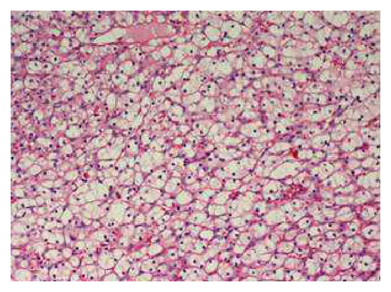
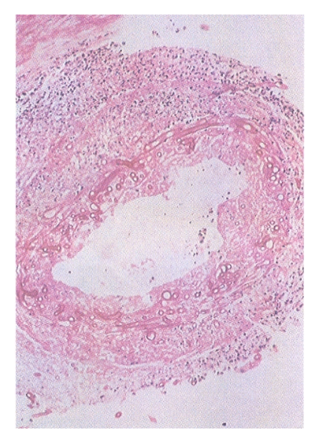

開卷有益 ／
醫師 ／ 醫學（二）（包括微生物免疫學、寄生蟲學、藥理學、病理學、公共衛生學等科目知識及其臨床之應用） ／ 106 年106 年醫師醫學（二）（包括微生物免疫學、寄生蟲學、藥理學、病理學、公共衛生學等科目知識及其臨床之應用）試題與答案
這一頁是民國 106 年醫師醫學（二）（包括微生物免疫學、寄生蟲學、藥理學、病理學、公共衛生學等科目知識及其臨床之應用）的整份歷屆試題，共 100 題，題目與標準答案出自考選部「國家考試試題及測驗式試題答案」開放資料，其中 100 題附有詳解。以下逐題列出題幹、選項與答案；要計時作答或記錄成績，請用線上練習。
考選部原始場次代碼：106100
線上作答這一科 →
全部 100 題
第 1 題
有關肝炎病毒中，下列何者與黃熱病毒（yellow fever virus）屬同一科？
（A） Hepatitis A virus（B） Hepatitis B virus（C） Hepatitis C virus（D） Hepatitis D virus答案：（C）
詳解與考點 正解：黃熱病毒（yellow fever virus）的病毒分類。黃熱病毒屬黃病毒科（Flaviviridae）；丙型肝炎病毒（Hepatitis C virus）同屬黃病毒科，因此選 C。兩者皆為具套膜的單股正股 RNA 病毒，但屬不同屬。
A：A 型肝炎病毒屬小RNA病毒科（Picornaviridae），為無套膜正股 RNA 病毒，非黃病毒科。
B：B 型肝炎病毒屬嗜肝 DNA 病毒科（Hepadnaviridae），具有部分雙股 DNA 與反轉錄步驟，分類不同。
D：D 型肝炎病毒是缺陷 RNA 病毒，需仰賴 B 型肝炎病毒表面抗原形成套膜，非黃病毒科成員。
本題考點：黃病毒科（Flaviviridae）——包括 yellow fever virus 與 hepatitis C virus；肝炎病毒分類（hepatitis virus classification）——不同肝炎病毒在核酸型態、套膜與複製策略皆不同。
第 2 題
有關炭疽桿菌（Bacillus anthracis）的敘述，下列何者錯誤？
（A） 由多胜肽（polypeptide）所組成的莢膜為重要的毒力因子（virulence factor）（B） 為毛工病（wool-sorter's disease）的致病菌（C） 在含血液培養盤上可形成大型β-溶血菌落（D） 炭疽毒素（anthrax toxin）的基因位於質體上答案：（C）
詳解與考點 正解：炭疽桿菌在血液培養基的典型菌落表現。炭疽桿菌（Bacillus anthracis）雖是大型革蘭氏陽性芽孢桿菌，通常為非溶血性；（C）稱形成大型 β 溶血菌落，與其典型性質不符，故為錯誤敘述。
A：其莢膜由聚 D-麩胺酸（poly-D-glutamic acid）組成，屬多胜肽莢膜，能抗吞噬而為重要毒力因子。
B：吸入炭疽病與處理受污染羊毛相關，故有毛工病（wool-sorter’s disease）之稱。
D：炭疽毒素的相關基因位於質體上，與其莢膜基因的質體遺傳共同構成毒力基礎。
本題考點：炭疽桿菌（Bacillus anthracis）——非溶血性、具芽孢與聚麩胺酸莢膜；炭疽毒素（anthrax toxin）——毒力相關基因由質體攜帶。
第 3 題
肺結核患者的致病菌，能藉由抑制宿主細胞之早期內體自體抗原1（early endosomal autoantigen 1,EEA1），以阻止下列那一種現象的發生？
（A） 溶小體（lysosome）與吞噬體（phagosome）的融合（B） 巨噬細胞（macrophage）分泌介白質11（interleukin-11）（C） 巨噬細胞（macrophage）內的環單磷酸腺苷（cAMP）濃度上升（D） 丙型丁胺酸（gamma-aminobutyric acid, GABA）的釋放答案：（A）
詳解與考點 正解：結核分枝桿菌藉 EEA1 逃避免疫清除的機制。早期內體自體抗原 1（EEA1）參與吞噬體成熟與囊泡運輸；結核分枝桿菌抑制 EEA1，可阻斷吞噬體與溶小體融合，使其不易暴露於溶小體的酸性與水解酶環境，故選 A。
B：介白質 11（interleukin-11）分泌不是 EEA1 所直接調控的吞噬體成熟步驟。
C：巨噬細胞 cAMP 上升可受多種訊號調節，但不是抑制 EEA1 的直接結果，也不能解釋吞噬體成熟受阻。
D：GABA 是神經傳遞物質，與本題巨噬細胞中 EEA1 介導的吞噬體－溶小體融合無關。
本題考點：結核分枝桿菌（Mycobacterium tuberculosis）——可在巨噬細胞內存活；吞噬體成熟（phagosome maturation）——EEA1 受抑制會阻礙 phagosome 與 lysosome 融合。
第 4 題
關於Q熱（Q fever）致病菌之相改變（phase transition）現象的敘述，下列何者正確？
（A） 相改變是因為此菌的鞭毛（flagellum）基因發生突變所造成（B） 當此菌處於第一相（phase I）時，其細胞壁（cell wall）不含O抗原醣（O-antigen sugars）（C） 當此菌處於第二相（phase II）時，能抑制吞噬體（phagosome）與溶小體（lysosome）的融合（D） 急性期時，病人體內產生的IgM及IgG抗體主要是對抗第二相的抗原答案：（D）
詳解與考點 正解：Q 熱病原 Coxiella burnetii 的相變異與血清學反應。急性 Q 熱時，宿主首先且主要對第二相（phase II）抗原產生 IgM 與 IgG；因此（D）正確。第一相與第二相的抗原差異主要反映脂多醣結構變化，並用於協助判讀急、慢性感染。
A：相改變不是鞭毛基因突變；Coxiella burnetii 的相變異重點在表面脂多醣抗原。
B：第一相（phase I）保有完整的脂多醣與 O 抗原樣結構，並非不含 O 抗原醣。
C：抑制吞噬體與溶小體融合是某些胞內病原的策略，但不是第二相 Coxiella burnetii 的相變異定義；第二相反而是體外傳代後的截短脂多醣型。
本題考點：Q 熱（Q fever）——病原為 Coxiella burnetii；相變異（phase variation）——phase I 與 phase II 的表面抗原不同；Q 熱血清學（Q fever serology）——急性感染以 phase II 抗體反應為主。
第 5 題
某求診男性，經診斷患有尿道炎（urethritis）和結膜炎（conjunctivitis）。下列何者最有可能是其致病菌？
（A） 埃及嗜血桿菌（Haemophilus aegyptius）（B） 立氏立克次體（Rickettsia rickettsii）（C） 人類黴漿菌（Mycoplasma hominis）（D） 砂眼披衣菌（Chlamydia trachomatis）答案：（D）
詳解與考點 正解：男性同時有尿道炎（urethritis）與結膜炎（conjunctivitis）的組合。砂眼披衣菌（Chlamydia trachomatis）可造成非淋菌性尿道炎，亦可感染結膜，符合此臨床表現，故選 D。
A：埃及嗜血桿菌（Haemophilus aegyptius）主要與急性結膜炎相關，無法典型解釋合併尿道炎。
B：立氏立克次體（Rickettsia rickettsii）造成洛磯山斑疹熱，以發燒、皮疹及血管炎為主，非尿道炎－結膜炎組合。
C：人類黴漿菌（Mycoplasma hominis）可與泌尿生殖道感染相關，因而看似合理；但題目以結膜炎合併尿道炎指向披衣菌感染更典型。
本題考點：砂眼披衣菌（Chlamydia trachomatis）——常見非淋菌性尿道炎病原；披衣菌感染（chlamydial infection）——可同時侵犯泌尿生殖道與眼結膜。
第 6 題
下列那一種抗生素，適合用來治療嗜肺性退伍軍人菌（Legionella pneumophila）所引起的肺炎？
（A） 克林達黴素（clindamycin）（B） 阿奇黴素（azithromycin）（C） 安比西林（ampicillin）（D） 兩性黴素B（amphotericin B）本題送分，無標準答案
詳解與考點 本題官方公告送分。
第 7 題
關於致病菌與疾病的配對，下列何者錯誤？
（A） 肺炎克雷白氏桿菌（Klebsiella pneumoniae）– 肝膿瘍（liver abscess）（B） 創傷弧菌（Vibrio vulnificus）– 敗血症（septicemia）（C） 空腸彎曲桿菌（Campylobacter jejuni）– 腸胃炎（gastroenteritis）（D） 鼠疫桿菌（Yersinia pestis）–萊姆病（Lyme disease）答案：（D）
詳解與考點 正解：鼠疫桿菌與萊姆病是否相配。鼠疫桿菌（Yersinia pestis）造成鼠疫，不造成萊姆病；萊姆病的病原是伯氏疏螺旋體（Borrelia burgdorferi），故錯誤配對為 D。
A：肺炎克雷白氏桿菌（Klebsiella pneumoniae）可造成侵襲性肝膿瘍，配對正確。
B：創傷弧菌（Vibrio vulnificus）可在高風險宿主引起嚴重傷口感染與敗血症，配對正確。
C：空腸彎曲桿菌（Campylobacter jejuni）是常見細菌性腸胃炎病原，配對正確。
本題考點：人畜共通感染（zoonotic infection）——Yersinia pestis 引起鼠疫；萊姆病（Lyme disease）——病原為 Borrelia burgdorferi，非 Yersinia pestis。
第 8 題
下列何者最不常用在以細菌來進行的基因工程技術中？
（A） DNA gyrase（B） Restriction enzyme（C） DNA ligase（D） Cloning vector答案：（A）
詳解與考點 正解：以細菌進行基因工程時，最不常作為操作元件的是哪一項。DNA gyrase 的生理功能是調節 DNA 超螺旋與協助複製，並非重組 DNA 實驗中用來切接或攜帶目的基因的標準工具，故選 A。
B：限制酶（restriction enzyme）辨識特定 DNA 序列並切割，是建立重組 DNA 的常用工具。
C：DNA 連接酶（DNA ligase）將目的 DNA 片段與載體的磷酸二酯鍵接合，是克隆步驟的必要工具。
D：克隆載體（cloning vector）攜帶目的 DNA 進入宿主細胞並使其複製，是細菌基因工程的基本元件。
本題考點：重組 DNA 技術（recombinant DNA technology）——restriction enzyme 負責切割、DNA ligase 負責接合；克隆載體（cloning vector）——用以導入並擴增目的 DNA。
第 9 題
下列那一種造成呼吸道感染的病毒，可不經由反轉錄作用（reverse transcription），而直接以polymerasechain reaction（PCR）檢測？
（A） 腺病毒（adenovirus）（B） A型流感病毒（influenza A virus）（C） 中東呼吸症候群冠狀病毒（MERS-CoV）（D） 呼吸道細胞融合病毒（respiratory syncytial virus）答案：（A）
詳解與考點 正解：能直接做 PCR 的呼吸道病毒，亦即基因體為 DNA 而非 RNA。腺病毒（adenovirus）是雙股 DNA 病毒，檢測其核酸時可直接以 PCR 擴增；其餘選項皆為 RNA 病毒，通常須先以 reverse transcription 轉為 cDNA，故選 A。
B：A 型流感病毒（influenza A virus）為負股 RNA 病毒，核酸檢測通常需 RT-PCR。
C：中東呼吸症候群冠狀病毒（MERS-CoV）為正股 RNA 病毒，不能省略反轉錄步驟。
D：呼吸道細胞融合病毒（respiratory syncytial virus）為負股 RNA 病毒，檢測 RNA 基因體亦需先反轉錄。
本題考點：PCR 與 RT-PCR（polymerase chain reaction and reverse-transcription PCR）——DNA 模板可直接 PCR，RNA 模板須先轉為 cDNA；腺病毒（adenovirus）——雙股 DNA 病毒。
第 10 題
有關人類乳突瘤病毒（Human Papillomavirus, HPV）的敘述，下列何者錯誤？
（A） HPV-6和HPV-11是引起子宮頸癌的低危險病毒株（B） E5 病毒蛋白質會與p53結合（C） E7病毒蛋白質會與p105RB蛋白質結合（D） E1蛋白質與病毒的複製有關答案：（B）
詳解與考點 正解：HPV 哪個早期蛋白會結合 p53。高危險型 HPV 的 E6 蛋白會促進 p53 降解；E7 則結合 RB 蛋白。因此（B）把 E5 誤稱為與 p53 結合的蛋白，為錯誤敘述，故選 B。
A：HPV-6 與 HPV-11 為低危險型病毒株，較典型造成生殖器疣而非高危險型相關癌症，選項以「低危險」分類的核心正確。
C：E7 病毒蛋白質會結合 p105RB 蛋白，解除 RB 對細胞週期的抑制，敘述正確。
D：E1 是 HPV 複製所需的蛋白，參與病毒 DNA 複製起始，敘述正確。
本題考點：HPV 致癌蛋白（HPV oncoproteins）——E6 影響 p53、E7 影響 RB；HPV 複製（HPV replication）——E1 與病毒 DNA 複製相關。
第 11 題
下列何種病毒，通常不經過垂直感染傳給胎兒？
（A） 德國麻疹病毒（Rubella virus）（B） 巨細胞病毒（Cytomegalovirus）（C） 呼腸病毒（Reovirus）（D） 單純疱疹病毒（Herpes simplex virus）答案：（C）
詳解與考點 正解：通常不以母胎垂直感染傳給胎兒的病毒。呼腸病毒（Reovirus）不是經典先天性感染病原，通常不經垂直感染傳給胎兒，故選 C。
A：德國麻疹病毒（Rubella virus）可經胎盤垂直感染並造成先天性德國麻疹症候群。
B：巨細胞病毒（Cytomegalovirus）可經胎盤感染胎兒，是常見先天性感染病原。
D：單純疱疹病毒（Herpes simplex virus）可在妊娠或尤其分娩時傳給新生兒；它看似較常以產道傳播，但仍屬可垂直傳播的病毒。
本題考點：垂直感染（vertical transmission）——rubella virus、cytomegalovirus 與 herpes simplex virus 均可造成母子傳播；先天性感染（congenital infection）——Reovirus 非典型病原。
第 12 題
下列何種病毒複製時，會在細胞質產生一種稱為內基氏小體（Negri body）的包涵體？
（A） 天花病毒（variola virus）（B） 狂犬病病毒（rabies virus）（C） 人類巨細胞病毒（human cytomegalovirus）（D） 水痘–帶狀疱疹病毒（varicella-zoster virus）答案：（B）
詳解與考點 正解：內基氏小體（Negri body）的特徵性病原。狂犬病病毒（rabies virus）在神經元細胞質形成 Negri bodies，是狂犬病的重要病理學線索，故選 B。
A：天花病毒（variola virus）亦在細胞質複製並可形成包涵體，但不是 Negri body。
C：人類巨細胞病毒（human cytomegalovirus）典型為核內「貓頭鷹眼」包涵體，不是細胞質 Negri body。
D：水痘－帶狀疱疹病毒（varicella-zoster virus）屬疱疹病毒，複製與包涵體特徵主要在細胞核，非 Negri body。
本題考點：狂犬病病毒（rabies virus）——負股 RNA 病毒，可在神經元細胞質形成 Negri body；病毒包涵體（viral inclusion body）——其位置與形態可協助鑑別病毒。
第 13 題
人類腺病毒（adenovirus）與下列何種病毒使用相同的細胞受器（receptor）？
（A） B型克沙奇病毒（Coxsackie B virus）（B） 諾羅病毒（Norovirus）（C） 巨細胞病毒（Cytomegalovirus）（D） 流感病毒（Influenza virus）答案：（A）
詳解與考點 正解：腺病毒與哪一病毒共用細胞受器。腺病毒常利用 coxsackievirus and adenovirus receptor（CAR）進入細胞；B 型克沙奇病毒（Coxsackie B virus）也可利用 CAR，因此選 A。
B：諾羅病毒（Norovirus）與腸道組織的組織血型抗原（histo-blood group antigens）相關，非 CAR。
C：巨細胞病毒（Cytomegalovirus）具有多種細胞進入途徑與受器，非以 CAR 為其經典共同受器。
D：流感病毒（Influenza virus）以血球凝集素結合細胞表面的唾液酸（sialic acid），與 CAR 不同。
本題考點：病毒受器（viral receptor）——受器決定病毒的細胞趨性；CAR（coxsackievirus and adenovirus receptor）——為 adenovirus 與 Coxsackie B virus 的共同受器。
第 14 題
下列那種黴菌會引起全身性感染，且其酵母菌型常呈現舵輪（mariner's wheel）樣之多重出芽生殖?
（A） 粗球黴菌（Coccidioides immitis）（B） 巴西副球黴菌（Paracoccidioides brasiliensis）（C） 莢膜組織胞漿菌（Histoplasma capsulatum）（D） 皮炎芽生菌（Blastomyces dermatitidis）答案：（B）
詳解與考點 正解：酵母菌型呈舵輪（mariner’s wheel）樣多重出芽的形態。巴西副球黴菌（Paracoccidioides brasiliensis）為可致全身性感染的雙相性真菌，其母細胞周圍多個子芽孢排列成舵輪樣，故選 B。
A：粗球黴菌（Coccidioides immitis）在組織中形成內含內孢子的厚壁球形體，不呈舵輪樣多重出芽。
C：莢膜組織胞漿菌（Histoplasma capsulatum）在組織中為小型胞內酵母菌，常位於巨噬細胞內，無舵輪樣外觀。
D：皮炎芽生菌（Blastomyces dermatitidis）典型為寬基底出芽（broad-based budding），這是容易混淆的酵母型態，但不是多重舵輪出芽。
本題考點：巴西副球黴菌（Paracoccidioides brasiliensis）——雙相性真菌，酵母型為 mariner’s wheel；系統性黴菌病（systemic mycosis）——依組織型態協助鑑別病原。
第 15 題
下列何者為具厚壁球形體（spherules）以及關節孢子（arthroconidia）之真菌？
（A） 鬚髮癬菌（Trichophyton mentagrophytes）（B） 申克孢子絲菌（Sporothrix schenckii）（C） 莢膜組織胞漿菌（Histoplasma capsulatum）（D） 粗球孢子菌（Coccidioides immitis）答案：（D）
詳解與考點 正解：厚壁球形體（spherules）與關節孢子（arthroconidia）的組合。粗球孢子菌（Coccidioides immitis）在環境中菌絲可形成 arthroconidia，吸入後在組織內轉為含內孢子的厚壁 spherules，故選 D。
A：鬚髮癬菌（Trichophyton mentagrophytes）是皮癬菌，主要造成皮膚、毛髮及指甲感染，形態不具此組合。
B：申克孢子絲菌（Sporothrix schenckii）在組織中可見雪茄型酵母菌，非 spherules 與 arthroconidia。
C：莢膜組織胞漿菌（Histoplasma capsulatum）在組織中為小型酵母菌，在環境中可見大分生孢子；其形態與粗球孢子菌不同。
本題考點：粗球孢子菌（Coccidioides immitis）——環境型有 arthroconidia、組織型有 spherules；雙相性真菌（dimorphic fungi）——環境與宿主組織中的型態不同。
第 16 題
3歲男童，因為咽喉疼痛伴隨吞嚥與呼吸困難送至急診室，經醫師檢查，發現他在每次吸氣時都出現明顯阻塞的聲音，側頸X光（lateral neck x-ray）報告顯示會厭軟骨腫脹（swollen epiglottis），此最有可能是下列何種細菌感染所造成？
（A） b型流感嗜血桿菌（Haemophilus influenzae type b）（B） 無乳鏈球菌（Streptococcus agalactiae）（C） 奈瑟氏腦膜炎球菌（Neisseria meningitidis）（D） 單核球增多性李斯特菌（Listeria monocytogenes）答案：（A）
詳解與考點 正解：題幹的幼兒、吸氣性喘鳴、吞嚥困難與側頸片會厭腫脹，是急性會厭炎（acute epiglottitis）的典型組合。未接種疫苗時，最經典的病原為（A）b型流感嗜血桿菌（Haemophilus influenzae type b, Hib）；其可迅速造成上呼吸道阻塞，故選 A。
B：無乳鏈球菌（Streptococcus agalactiae）主要與新生兒敗血症、肺炎及腦膜炎相關，並非幼兒急性會厭炎的典型病原。
C：奈瑟氏腦膜炎球菌（Neisseria meningitidis）常造成腦膜炎或菌血症與出血性皮疹；雖也可定殖上呼吸道，但不能解釋本題特徵性的會厭腫脹。
D：單核球增多性李斯特菌（Listeria monocytogenes）較常見於孕婦、新生兒、老年人或免疫低下者的腦膜炎與菌血症，與此幼兒急性會厭炎的流行病學不符。
本題考點：急性會厭炎（acute epiglottitis）以吞嚥困難、吸氣性喘鳴及會厭腫脹為線索；b型流感嗜血桿菌（Haemophilus influenzae type b, Hib）是其經典細菌病原。
第 17 題
承上題，下列何者為該細菌最重要的致病因子（virulence factor）？
（A） 細菌表面的線毛（pili）（B） 細菌表面的多醣體莢膜（polysaccharide capsule）（C） 細胞毒素（cytotoxin）（D） 細胞壁的胜肽聚醣（peptidoglycan）答案：（B）
詳解與考點 正解：承上題的會厭炎病原為 Hib；其最重要的侵襲性致病因子是（B）多醣體莢膜（polysaccharide capsule）。莢膜可抗吞噬、提高菌血症與深部感染的能力，也是 Hib 疫苗所針對的關鍵抗原，故選 B。
A：線毛（pili）可協助細菌附著於宿主黏膜，對定殖有意義；但 Hib 能造成侵襲性疾病的關鍵在抗吞噬的莢膜，而非線毛。
C：細胞毒素（cytotoxin）不是 Hib 造成會厭炎與菌血症的核心致病機轉；此選項看似能解釋組織傷害，卻未能解釋其典型侵襲性。
D：胜肽聚醣（peptidoglycan）是大多數細菌細胞壁的基本結構，並非 Hib 特異且最重要的致病因子。
本題考點：b型流感嗜血桿菌（Haemophilus influenzae type b）的多醣體莢膜（polysaccharide capsule）可抗吞噬並促進侵襲性感染；莢膜抗原是結合型疫苗（conjugate vaccine）的標的。
第 18 題
下列何種產物具有調理作用（opsonization），可增強macrophage、neutrophils的吞噬作用？
（A） Interferon（B） IL-1（C） TNF-α（D） complement答案：（D）
詳解與考點 正解：「調理作用」與增強巨噬細胞、嗜中性白血球吞噬。補體（complement）活化後的 C3b 可包被病原表面，供吞噬細胞的補體受體辨識，因而促進吞噬，故選 D。
A：干擾素（interferon）主要誘發抗病毒狀態、調節免疫反應，並不是經典的調理素。
B：IL-1 是促發炎細胞激素，參與發燒與內皮活化；它可促進發炎細胞募集，但不以包被病原來直接增強吞噬。
C：TNF-α 也是重要促發炎細胞激素，可活化內皮與促進全身性發炎，功能不同於 C3b 的調理作用。
本題考點：調理作用（opsonization）由 C3b 與 IgG 等調理素包被病原；補體受體（complement receptor）與 Fc 受體可使吞噬細胞更有效辨識病原。
第 19 題
成熟的B細胞可以同時表現IgD與IgM兩種免疫球蛋白於細胞表面上，其主要的分子機制為何？
（A） RNA多樣裁接（alternative splicing）（B） 對偶基因排除（allelic exclusion）（C） V(D)J片段重組（recombination）（D） 基因轉換（gene conversion）答案：（A）
詳解與考點 正解：成熟初始 B 細胞可在同一細胞表面同時表現 IgM 與 IgD，關鍵是同一重鏈初級轉錄本經不同的 RNA 多樣裁接（alternative splicing），選用 Cμ 或 Cδ 恆定區外顯子；可變區相同，因此抗原特異性相同，故選 A。
B：對偶基因排除（allelic exclusion）使一個 B 細胞主要表現單一重鏈與單一輕鏈等位基因，維持單一抗原特異性，不能解釋 IgM、IgD 並存。
C：V(D)J 片段重組（V(D)J recombination）建立免疫球蛋白的可變區多樣性，發生在 B 細胞發育早期；它不是在既有細胞上切換 IgM 與 IgD 表現的步驟。
D：基因轉換（gene conversion）可參與某些物種抗體多樣性的產生，但不是人類成熟 B 細胞同時表現 IgM、IgD 的主要機制。
本題考點：RNA 多樣裁接（alternative splicing）可由同一重鏈轉錄本產生膜型 IgM 與 IgD；V(D)J 重組（V[D]J recombination）則負責抗原結合可變區的多樣性。
第 20 題
B細胞被抗原刺激後，細胞膜上之免疫球蛋白可轉變成分泌型抗體，其機制為何？
（A） DNA重組（DNA recombination）（B） RNA剪接（RNA splicing）（C） 蛋白分解酶（protease）切割（D） 蛋白激酶（protein kinase）修飾答案：（B）
詳解與考點 正解：同一 B 細胞的膜上免疫球蛋白轉為分泌型抗體。兩者重鏈可變區與類別可相同，但末端外顯子不同；轉錄後藉 RNA 剪接（RNA splicing）選用分泌型而非跨膜型尾端，遂產生可分泌的抗體，故選 B。
A：DNA 重組（DNA recombination）可參與類別轉換（class-switch recombination），但題目問的是膜型與分泌型形式的轉換，主要不是 DNA 層次改變。
C：蛋白分解酶切割可修飾某些蛋白質，卻不能決定免疫球蛋白重鏈是否含有跨膜區。
D：蛋白激酶修飾是磷酸化訊號調控，並不會改變抗體轉錄本的膜型或分泌型尾端。
本題考點：免疫球蛋白 RNA 剪接（immunoglobulin RNA splicing）決定膜型或分泌型抗體；類別轉換（class-switch recombination）改變恆定區類別，兩者不可混淆。
第 21 題
有關細胞激素的功能，下列敘述何者錯誤？
（A） 調節性T細胞（regulatory T cell）可以分泌TGF-β來抑制效應性T細胞（effector T cell）之功能（B） IL-6與TGF-β可以幫助CD4+ T細胞分化變成第十七型輔助性T細胞（TH17）（C） IL-17主要的功能為吸引嗜酸性白血球（D） IL-4與IL-5主要由第二型輔助性T細胞（TH2）分泌而來，可以一起幫助B細胞產生IgE抗體答案：（C）
詳解與考點 正解：本題問錯誤敘述。IL-17 的代表性作用是誘導發炎介質與趨化因子、募集嗜中性白血球以對抗胞外細菌及真菌，並非主要吸引嗜酸性白血球；故錯誤的是 C。
A：調節性 T 細胞（regulatory T cell）可分泌 TGF-β 抑制效應性 T 細胞功能，為免疫耐受的重要機制，敘述正確。
B：在適當細胞激素環境下，IL-6 與 TGF-β 可促進 CD4+ T 細胞往 TH17 分化，敘述正確。
D：第二型輔助性 T 細胞（TH2）可分泌 IL-4、IL-5；IL-4 尤其與 B 細胞 IgE 類別轉換有關。此選項看似把兩種細胞激素都直接等同於 IgE，但整體描述的是 TH2 型過敏反應，故非本題錯項。
本題考點：第十七型輔助性 T 細胞（TH17）與 IL-17 主要促進嗜中性白血球反應；第二型輔助性 T 細胞（TH2）及 IL-4 與 IgE 相關；調節性 T 細胞（regulatory T cell）以 TGF-β 等維持免疫抑制。
第 22 題
人類與小鼠的腸道中，寄生有上千種的共生菌，但是正常個體並不會對這些共生菌產生免疫反應，下列敘述何者錯誤？
（A） 共生菌不像致病菌會利用毒性因子，破壞上皮細胞或是引起發炎細胞激素之分泌（B） 與共生菌存在的上皮細胞會分泌TGF-β等細胞激素（C） 腸道的免疫系統主要會產生IgA與共生菌結合，而後引起補體的活化清除共生菌（D） 腸道的上皮細胞在接觸共生菌的表面，並不會表現Toll-like receptors及CD14，因此較不易產生發炎反應本題送分，無標準答案
詳解與考點 本題官方公告送分。
第 23 題
最近新上市一種抗氣喘藥物，您發現氣喘病人治療幾個月後，不僅相關臨床症狀消失，檢測血液中抗原特異性IgE抗體效價也降低，而且也偵測不到抗原特異性CD4+ T細胞分泌的IL-4、IL-5及IL-13，這種抗氣喘藥物可能具有調節免疫反應的功能，下列那種細胞最不可能與這種治療效果有關？
（A） 第一型輔助性T細胞（TH1）（B） TR1細胞（C） 第十七型輔助性T細胞（TH17）（D） CD4+ CD25+ T細胞本題送分，無標準答案
詳解與考點 本題官方公告送分。
第 24 題
最常導致超高 IgE 症候群（hyper IgE syndrome）的基因突變是位在下列那一個基因？
（A） STAT1（B） JAK1（C） NEMO（D） STAT3答案：（D）
詳解與考點 正解：最常見的超高 IgE 症候群（hyper IgE syndrome）是常染色體顯性型，核心缺陷為 STAT3 基因突變。STAT3 訊號異常會妨礙 TH17 分化，造成反覆皮膚與肺部感染、濕疹及 IgE 顯著升高，故選 D。
A：STAT1 突變與多種免疫失調表現有關，但不是經典常見高 IgE 症候群的主要基因。
B：JAK1 是細胞激素訊號傳遞分子，其變異可影響免疫功能，但不是本題所指最常見診斷的典型基因。
C：NEMO 缺陷可造成外胚層發育異常合併免疫缺陷等疾病，免疫表型與 STAT3 型高 IgE 症候群不同。
本題考點：高 IgE 症候群（hyper IgE syndrome）常見的 STAT3 缺陷會影響 TH17 分化；訊號轉導及轉錄活化因子 3（signal transducer and activator of transcription 3, STAT3）是關鍵分子。
第 25 題
小玉每年在晚秋時常發作氣喘，醫師建議進行抽血來檢測過敏原，主要是檢查血清中對過敏原具特異性之何種抗體？
（A） IgM（B） IgG（C） IgE（D） IgA答案：（C）
詳解與考點 正解：反覆季節性氣喘暗示第一型過敏反應（type I hypersensitivity）。檢測特定過敏原致敏狀態時，檢驗的是血清中對該過敏原具特異性的 IgE；IgE 與肥大細胞、嗜鹼性白血球受體結合並參與立即性反應，故選 C。
A：IgM 是初次體液免疫反應較早出現的抗體，非過敏原特異性致敏檢測的主要標的。
B：IgG 可反映暴露或免疫反應，但一般不作為氣喘過敏原特異性檢驗的主要抗體；它看似也能「特異性」結合抗原，卻不代表 IgE 介導的立即型過敏。
D：IgA 主要負責黏膜表面免疫，與過敏原致敏的血清檢測不符。
本題考點：第一型過敏反應（type I hypersensitivity）由 IgE 介導；過敏原特異性 IgE（allergen-specific IgE）是評估致敏的重要檢驗概念。
第 26 題
對抗細胞表面受體（cell surface receptors）的抗體，能夠引起器官破壞的自體免疫病，例如抗乙醯膽鹼受體抗體（anti-acetylcholine receptor antibody）能夠引起下列那一種疾病？
（A） 重症肌無力（myasthenia gravis）（B） 尋常天疱瘡（pemphigus vulgaris）（C） 多發性硬化症（multiple sclerosis）（D） 紅斑性狼瘡（systemic lupus erythematosus）答案：（A）
詳解與考點 正解：抗乙醯膽鹼受體抗體會結合神經肌肉接合處的突觸後受體，使受體功能受阻並可引發受體內化或補體傷害，造成易疲勞的骨骼肌無力，這就是重症肌無力（myasthenia gravis），故選 A。
B：尋常天疱瘡（pemphigus vulgaris）的抗體主要針對橋粒相關蛋白，使角質細胞間黏著喪失；靶抗原不是乙醯膽鹼受體。
C：多發性硬化症（multiple sclerosis）以中樞神經髓鞘的免疫性傷害為主，不能由抗乙醯膽鹼受體抗體直接解釋。
D：紅斑性狼瘡（systemic lupus erythematosus）常見抗核抗體與免疫複合體相關傷害，屬不同的自體免疫機轉。
本題考點：重症肌無力（myasthenia gravis）是抗乙醯膽鹼受體抗體（anti-acetylcholine receptor antibody）介導的自體免疫疾病；第二型過敏反應（type II hypersensitivity）可由抗細胞表面受體抗體造成受體功能異常。
第 27 題
下列那一項敘述與腫瘤細胞逃避免疫系統監測無關？
（A） 抗體導致腫瘤細胞表面抗原的內吞（endocytosis）作用（B） 腫瘤細胞促進調節性T細胞（regulatory T cells）的浸潤（C） 腫瘤細胞分泌TGF-β細胞激素（D） 腫瘤細胞會活化抗原呈現細胞（antigen-presenting cell），並促進其co-stimulatory signals 的大量表現答案：（D）
詳解與考點 正解：腫瘤逃避免疫監測的共同方向是降低抗腫瘤免疫辨識或效應。活化抗原呈現細胞（antigen-presenting cell）並增加共刺激訊號（co-stimulatory signals），反會有效活化 T 細胞、增強抗腫瘤免疫，因此與逃避免疫監測無關，故選 D。
A：抗體促使腫瘤細胞表面抗原內吞，可使可被辨識的抗原減少，屬腫瘤免疫逃脫機制。
B：腫瘤促進調節性 T 細胞（regulatory T cells）浸潤，會抑制效應 T 細胞反應，有利於腫瘤逃避。
C：腫瘤分泌 TGF-β 可抑制抗腫瘤免疫、營造免疫抑制微環境，與逃避機制有關。
本題考點：腫瘤免疫逃脫（tumor immune evasion）可藉抗原減少、調節性 T 細胞（regulatory T cell）與 TGF-β 形成免疫抑制；共刺激訊號（co-stimulatory signal）增加則促進 T 細胞活化。
第 28 題
豬心移植於靈長類動物將發生超急性排斥（hyperacute rejection），此現象可以透過基因轉殖下列何種人類基因而減緩？
（A） 免疫球蛋白-G（immunoglobulin-G）（B） 補體（complement）（C） CD（clusters of differentiation）52（D） CD（clusters of differentiation）59答案：（D）
詳解與考點 正解：豬心異種移植的超急性排斥（hyperacute rejection）主要由受者既有抗體結合血管內皮抗原後迅速活化補體所致。表現人類 CD59 可抑制補體膜攻擊複合體（membrane attack complex）的形成，減少補體介導的內皮傷害，因此可減緩此反應，故選 D。
A：免疫球蛋白 G（immunoglobulin-G）是抗體類別，本身不是用來抑制移植器官表面補體攻擊的保護性基因。
B：補體（complement）是促成超急性排斥的效應系統；增加其表現不會保護異種移植物。
C：CD52 主要表現在多種淋巴球表面，與以補體膜攻擊複合體為核心的超急性排斥保護不符。
本題考點：超急性排斥（hyperacute rejection）由既存抗體與補體（complement）迅速介導；CD59 是補體調節蛋白（complement regulatory protein），可抑制膜攻擊複合體（membrane attack complex）。
第 29 題
班氏絲蟲（Wuchereria bancrofti）之患者服用下列何種藥物有助於白天採血檢查微絲蟲（microfilaria）？
（A） albendazole（B） diethylcarbamazine（C） praziquantel（D） metronidazole答案：（B）
詳解與考點 正解：班氏絲蟲（Wuchereria bancrofti）微絲蟲常呈夜間週期性出現於周邊血，故白天採血較不易檢出。diethylcarbamazine 可使微絲蟲暫時出現在周邊血中，作為誘發試驗以利白天檢查，故選 B。
A：albendazole 可用於多種蠕蟲感染，亦可納入部分絲蟲治療策略，但不是本題用來使微絲蟲白天出現於周邊血的典型藥物。
C：praziquantel 主要用於吸蟲與絛蟲感染，並非班氏絲蟲微絲蟲的誘發檢查用藥。
D：metronidazole 主要治療厭氧菌及部分原蟲感染，對絲蟲微絲蟲檢出沒有此作用。
本題考點：班氏絲蟲（Wuchereria bancrofti）的微絲蟲（microfilaria）可有夜間週期性；diethylcarbamazine 可用於絲蟲症並協助日間檢出微絲蟲。
第 30 題
下列何種人體寄生蟲可因入侵生殖系統進入腹腔（peritoneal cavity）而導致慢性骨盆腔腹膜炎（chronicpelvic peritonitis）？
（A） 蟯蟲（Enterobius vermicularis）（B） 鞭蟲（Trichuris trichiura）（C） 旋毛蟲（Trichinella spiralis）（D） 蛔蟲（Ascaris lumbricoides）答案：（A）
詳解與考點 正解：蟯蟲（Enterobius vermicularis）雌蟲可由肛門周圍移行進入女性生殖道，向上達子宮、輸卵管甚至腹腔，引起骨盆腔或腹膜發炎；因此可造成慢性骨盆腔腹膜炎，故選 A。
B：鞭蟲（Trichuris trichiura）主要寄生於盲腸與結腸，可造成腹瀉或嚴重感染時直腸脫垂，並不典型侵入生殖系統。
C：旋毛蟲（Trichinella spiralis）經食入幼蟲感染，幼蟲移行至橫紋肌形成囊體，病灶不是經生殖道進入腹腔。
D：蛔蟲（Ascaris lumbricoides）可在腸道、膽道或胰管造成問題；它看似也會移行，但路徑不是女性生殖道上行。
本題考點：蟯蟲（Enterobius vermicularis）可造成肛門搔癢，也能異位移行至女性生殖道；異位寄生（ectopic parasitism）是其少見但重要的臨床表現。
第 31 題
衛氏肺吸蟲（Paragonimus westermani）的感染途徑為：
（A） 生食含囊狀幼蟲（metacercaria）的淡水魚（B） 生食含囊狀幼蟲（metacercaria）的水生植物（C） 生食含囊狀幼蟲（metacercaria）的淡水螃蟹（D） 由尾動幼蟲（cercaria）鑽入皮膚感染答案：（C）
詳解與考點 正解：衛氏肺吸蟲（Paragonimus westermani）的感染關鍵是食入第二中間宿主淡水螃蟹或螯蝦內的囊狀幼蟲（metacercaria）。題目選項中符合者為生食含囊狀幼蟲的淡水螃蟹，故選 C。
A：淡水魚的囊狀幼蟲是部分肝吸蟲等寄生蟲的重要感染來源，並非衛氏肺吸蟲的典型第二中間宿主。
B：水生植物上的囊狀幼蟲常見於某些肝吸蟲感染途徑，與肺吸蟲的甲殼類中間宿主不同。
D：尾動幼蟲（cercaria）鑽入皮膚是血吸蟲感染的典型途徑，不是肺吸蟲。
本題考點：衛氏肺吸蟲（Paragonimus westermani）經生食淡水蟹類或螯蝦的囊狀幼蟲（metacercaria）感染；第二中間宿主（second intermediate host）是吸蟲生活史的重要鑑別。
第 32 題
李姓學童日前於居家附近池塘游泳返家後，陸續出現發燒、頭痛、鼻塞及嗅覺失常等症狀，經住院檢查發現白血球高達24,000/cmm（>90%為嗜中性白血球）、頸部僵硬及凱尼格氏徵象（Kernig’s sign），並於住院五天後死亡。依據上述結果，李姓學童最可能感染何種寄生蟲？
（A） 福氏內格里阿米巴（Naegleria fowleri）（B） 痢疾阿米巴（Entamoeba histolytica）（C） 棘阿米巴（Acanthamoeba spp.）（D） 大腸阿米巴（Entamoeba coli）答案：（A）
詳解與考點 正解：池塘游泳後先有鼻部症狀，迅速進展為高嗜中性白血球性腦膜腦炎、頸部僵硬並在數日內死亡，最符合福氏內格里阿米巴（Naegleria fowleri）經鼻腔侵入的原發性阿米巴腦膜腦炎（primary amebic meningoencephalitis），故選 A。
B：痢疾阿米巴（Entamoeba histolytica）主要造成腸炎、肝膿瘍，通常不是淡水游泳後急遽致死的化膿性腦膜炎型態。
C：棘阿米巴（Acanthamoeba spp.）可造成角膜炎或較緩慢的肉芽腫性阿米巴腦炎，病程與本題暴露後急速惡化不符。
D：大腸阿米巴（Entamoeba coli）一般為腸道非致病性共生原蟲，不能解釋嚴重中樞神經感染。
本題考點：福氏內格里阿米巴（Naegleria fowleri）可由溫暖淡水經鼻腔進入中樞神經；原發性阿米巴腦膜腦炎（primary amebic meningoencephalitis）病程急、致死率高。
第 33 題
陳先生到印度鄉野自助旅行數月，回來後出現腹瀉、發燒、貧血等症狀，之後並出現肝脾腫大（hepatosplenomegaly）現象，骨髓穿刺在其巨噬細胞中發現無鞭毛體（amastigotes），血液及糞便檢查沒有其他發現，他最可能感染的寄生蟲病是：
（A） 黑水熱（blackwater fever）（B） 黑熱病（black fever）（C） 絲蟲症（filariasis）（D） 卡格氏症（Chagas’disease）答案：（B）
詳解與考點 正解：印度鄉野暴露、長期發燒、貧血、肝脾腫大，以及骨髓巨噬細胞內的無鞭毛體（amastigotes），是內臟利什曼病（visceral leishmaniasis）的典型線索，又稱黑熱病（black fever），故選 B。
A：黑水熱（blackwater fever）是重症瘧疾相關的血管內溶血與深色尿表現，不能以巨噬細胞內無鞭毛體解釋。
C：絲蟲症（filariasis）可造成淋巴阻塞等表現，診斷重點常為血液中的微絲蟲，而非骨髓巨噬細胞內無鞭毛體。
D：卡格氏症（Chagas’ disease）也可能看到細胞內無鞭毛體，因而是強誘答；但其流行區主要在美洲，且典型臨床表現與印度旅行後的肝脾腫大、骨髓侵犯不符。
本題考點：內臟利什曼病（visceral leishmaniasis）又稱黑熱病（black fever）；利什曼原蟲（Leishmania）無鞭毛體寄生於巨噬細胞，造成發燒、貧血與肝脾腫大。
第 34 題
下列有關痢疾阿米巴（Entamoeba histolytica）的敘述中，何者正確？
（A） 阿米巴肝膿瘍（amebic liver abscess）常發生在左葉肝臟（B） 在膿瘍的中央採檢體，檢出其滋養體 （trophozoites）的機會比較大（C） 阿米巴肝膿瘍（amebic liver abscess）的第一線用藥為mebendazole（D） 阿米巴腫（ameboma）常易被誤診為惡性腫瘤答案：（D）
詳解與考點 正解：阿米巴腫（ameboma）是痢疾阿米巴（Entamoeba histolytica）造成的局部肉芽腫性腸壁腫塊，影像或內視鏡可呈現腫瘤樣病灶，常須與大腸惡性腫瘤鑑別，故選 D。
A：阿米巴肝膿瘍較常發生於右葉肝臟，不是左葉。
B：阿米巴肝膿瘍的滋養體較可能在膿瘍壁緣與存活組織交界處找到，膿瘍中央內容物檢出機會較低。
C：阿米巴肝膿瘍應使用具組織作用的抗阿米巴藥物治療；mebendazole 是驅除多種線蟲的藥物，並非此病的第一線用藥。
本題考點：痢疾阿米巴（Entamoeba histolytica）可造成阿米巴肝膿瘍（amebic liver abscess）與阿米巴腫（ameboma）；阿米巴腫可模仿大腸惡性腫瘤（colorectal malignancy）。
第 35 題
下列何種節肢動物，主要以機械性傳播（mechanical transmission）方式媒介病原體？
（A） 蚊（mosquito）（B） 家蠅（house fly）（C） 跳蚤（flea）（D） 體蝨（body louse）答案：（B）
詳解與考點 正解：機械性傳播（mechanical transmission）是媒介節肢動物只把病原體由污染物帶到食物、傷口或黏膜，病原不必在媒介體內發育或增殖。家蠅（house fly）可用足部、口器與體表沾帶糞便中的病原而污染食物，是典型機械性媒介，故選 B。
A：蚊（mosquito）常是生物性媒介（biological vector），如病原在蚊體內經發育或增殖後再傳播。
C：跳蚤（flea）可媒介鼠疫等疾病，病原與媒介間具有生物性傳播關係，非本題最典型的純機械傳播。
D：體蝨（body louse）可傳播斑疹傷寒等病原，通常歸於生物性媒介；其看似也能在體表沾帶病原，但考題問的是最典型機械媒介，應選家蠅。
本題考點：機械性傳播（mechanical transmission）不要求病原在媒介體內發育或增殖；家蠅（house fly）是經典機械性媒介，須與生物性媒介（biological vector）區分。
第 36 題
為研究大腸癌病人術前準備情況與術後併發症的關係，某研究收集6位術前準備情況較好之大腸癌病人與 4 位術前準備情況較差者，術後兩組發生倂發症的人數分別為 1 位與 3 位。下列何種統計方法最恰當？
（A） 費雪恰當檢定（Fisher’s exact test）（B） 獨立樣本 t檢定（Independent sample t-test）（C） 卡方檢定（Chi-square test）（D） McNemar 檢定 (McNemar test)答案：（A）
詳解與考點 正解：題幹比較的是兩組獨立病人的術前準備狀態與術後是否發生併發症，形成小樣本的 2×2 列聯表：準備較好組 1/6 人有併發症，準備較差組 3/4 人有併發症。因總樣本僅 10 人，部分格數的期望值會很小，不宜依賴大樣本近似；費雪恰當檢定（Fisher's exact test）可直接計算列聯表的精確機率，最恰當，故選 A。
B：獨立樣本 t 檢定用於比較兩獨立組的連續型平均數；本題結果是「有無併發症」的二分類資料，不是在比較平均數。
C：卡方檢定也可分析兩個類別變項的關聯，看似符合本題的列聯表形式；但其 p 值仰賴足夠大的期望次數，本題樣本過小，應優先用費雪恰當檢定。
D：McNemar 檢定用於同一受試者前後配對的二分類結果，或配對個案；本題的兩組病人彼此獨立，沒有配對結構。
本題考點：列聯表分析（contingency table analysis）——兩獨立組的二分類結果可用卡方檢定或費雪恰當檢定；費雪恰當檢定（Fisher's exact test）特別適用於小樣本或期望次數偏低的 2×2 表。
第 37 題
某研究者想檢定新藥是否有降血壓效果，對 20 隻大鼠在餵食新藥前後分別測量血壓值，對於兩次血壓測量值的比較，下列統計分析方法何者最恰當？
（A） 線性迴歸（Linear regression）（B） 獨立樣本t檢定（Independent sample t-test）（C） 配對t檢定（Paired t-test）（D） 列聯表分析（Contingency table）答案：（C）
詳解與考點 正解：同一 20 隻大鼠在餵藥前、後各量一次血壓；兩次數值來自同一個體，彼此相關。配對 t 檢定（paired t-test）先以每隻大鼠的「餵藥後血壓－餵藥前血壓」作為一筆差值，再檢定這些差值的平均數是否為 0，因此能控制個體原本血壓的差異，最恰當，故選 C。
A：線性迴歸可建模血壓與多個預測因子的關係，但本題的核心是單一組受試者前後兩次連續測量值之平均差異，配對 t 檢定較直接。
B：獨立樣本 t 檢定假設兩組觀測值互不相關；若把同一隻大鼠的前後值當成獨立樣本，會忽略配對資訊並降低檢定效率。
D：列聯表分析處理類別資料的次數分布；血壓是連續型變數，並非本題適用的資料型態。
本題考點：配對資料（paired data）——同一受試者的前後測量須保留其相關性；配對 t 檢定（paired t-test）檢定個體內差值的平均數，而非把兩次測量當作獨立組。
第 38 題
測量一群兒童的血中鉛濃度（blood lead level, 單位µg/dl）與尿中古丁尼濃度（cotinine level, 單位ng/ml）的資料，今欲比較血中鉛濃度與尿中古丁尼濃度何者變異較大，下列何種統計量最合適？
（A） 標準差（standard deviation）（B） 變異數（variance）（C） 變異係數（coefficient of variation）（D） 全距（range）答案：（C）
詳解與考點 正解：要比較血中鉛濃度與尿中古丁尼濃度「何者變異較大」，但兩者單位分別為 µg/dl 與 ng/ml，量尺與平均數大小不同。變異係數（coefficient of variation, CV）以標準差除以平均數，通常以百分比表示，能比較無相同單位之測量值的相對離散程度，故選 C。
A：標準差反映原始單位下的絕對離散程度；兩變項的單位不同，標準差數值不能直接用來判定哪一者相對變異較大。
B：變異數是標準差的平方，單位也會平方化，除同樣無法跨不同量尺比較外，解讀更不直觀。
D：全距只取最大值與最小值之差，極易受單一極端值影響，且仍保留原始單位，不能解決兩測量尺度不同的問題。
本題考點：變異係數（coefficient of variation）——CV＝標準差／平均數，用於比較不同單位或不同平均數變項的相對變異；標準差（standard deviation）與變異數（variance）較適合在同一量尺內描述絕對離散。
第 39 題
一個臨床試驗評估密集運動計畫擬探討初次發病存活至少30天的心肌梗塞病人的有效性，初次發病存活至少30天的心肌梗塞病人被隨機分配至密集運動計畫或一般照護（usual care）。在100名一般照護的病人中，30名病人在三年的追蹤期間死亡；在100名密集運動計畫的病人中，50名病人在三年的追蹤期間死亡。密集運動計畫組相較於一般照護組的死亡相對危險性（relative risk of death）為何？
（A） 0.60（B） 0.03（C） 0.50（D） 1.67答案：（D）
詳解與考點 正解：求密集運動組相對於一般照護組的死亡相對危險性（relative risk, RR），須以兩組死亡風險相除。密集運動組死亡風險為 50/100=0.50；一般照護組死亡風險為 30/100=0.30；RR=0.50/0.30=1.666…，約為 1.67，故選 D。RR 大於 1 代表本研究中密集運動組死亡風險較高，並不表示運動必然造成死亡，仍須依研究結果與設計判讀。
A：0.60 是 30/50 的倒向比較，並非題目指定的「密集運動組相較於一般照護組」死亡風險比。
B：0.03 並非密集運動組風險、一般照護組風險或兩者的相對危險性，故不符合題意。
C：0.50 是密集運動組自身的死亡風險，看似使用了正確分子與分母；但相對危險性還必須再除以對照組的死亡風險。
本題考點：相對危險性（relative risk, RR）——RR＝暴露組風險／未暴露組風險；風險（risk）是該組事件數除以該組總人數，RR=1 表示兩組風險相同。
第 40 題
有一臨床研究，預計二年內收集200名病例及200名對照，進行某生長激素研究，醫師甲提議每收集一個病例即開具檢驗單，由檢驗室測量血中該生長激素的量；醫師乙提議先冷凍貯存病人血液樣本，再由檢驗室根據其日處理80個檢體的能量，於5個工作日全數測量完畢。下列何者正確？
（A） 醫師甲的計畫較容易出現選擇偏差（B） 醫師乙的計畫較容易出現選擇偏差（C） 醫師甲的計畫較容易出現測量誤差（D） 醫師乙的計畫較容易出現測量誤差答案：（C）
詳解與考點 正解：醫師甲隨收案時間逐一檢測、醫師乙則將所有檢體集中在 5 個工作日處理。生長激素檢驗若受試劑批次、儀器校正、操作人員或時間漂移影響，分散於兩年檢測會使不同受試者承受不同測量條件；這是測量誤差（measurement error）或批次效應的來源。因此較容易發生此問題的是醫師甲，故選 C。
A、B：選擇偏差（selection bias）源自病例或對照的納入、抽樣或留存方式；兩方案差別在檢驗時程，而非收案條件，不能據此判為何者較易有選擇偏差。
D：醫師乙在短時間內集中檢測，可較一致地使用同一套檢驗條件，正是用來減少跨時間測量變異的作法；前提是檢體保存方式適合該分析物。
本題考點：測量誤差（measurement error）——檢驗批次、校正與時間漂移可造成系統性或隨機誤差；批次效應（batch effect）可藉一致的檢驗條件與適當保存、隨機化檢體順序降低。
第 41 題
何種水中污染物會造成幼兒「藍嬰症」（methemoglobenemia）問題？
（A） 硫酸鹽（B） 硝酸鹽（C） 磷酸鹽（D） 碳酸鹽答案：（B）
詳解與考點 正解：幼兒藍嬰症的關鍵是變性血紅素血症（methemoglobinemia）。飲水中的硝酸鹽可在體內轉化為亞硝酸鹽，將血紅素中的二價鐵氧化為三價鐵，形成無法有效攜氧的變性血紅素；嬰幼兒較易受影響，故選 B。
A：硫酸鹽濃度偏高主要可造成腸胃道不適或腹瀉等問題，並非藍嬰症的典型水污染物。
C：磷酸鹽常與水體優養化相關，但不會以氧化血紅素造成變性血紅素血症。
D：碳酸鹽主要影響水的鹼度與硬度相關特性，不是造成藍嬰症的典型原因。
本題考點：變性血紅素血症（methemoglobinemia）——亞硝酸鹽氧化血紅素的鐵離子，降低攜氧能力；硝酸鹽（nitrate）污染的飲水在嬰幼兒是重要的公共衛生風險。
第 42 題
下列何者屬於非游離輻射？
（A） 宇宙射線（B） X光射線（X ray）（C） 迦馬射線（Gamma ray）（D） 紅外線（infrared radiation）答案：（D）
詳解與考點 正解：「非游離輻射」。紅外線（infrared radiation）屬較低能量的電磁輻射，主要造成熱效應，單一光子的能量不足以游離原子或分子，因此屬非游離輻射，故選 D。
A：宇宙射線含有高能量粒子與電磁輻射，可造成游離作用，屬游離輻射。
B：X 光射線（X ray）光子能量足以使物質游離，是醫療影像與輻射防護中典型的游離輻射。
C：迦馬射線（gamma ray）也是高能量電磁輻射，具有游離能力；它與 X 光的來源不同，但同屬游離輻射。
本題考點：游離輻射（ionizing radiation）——X 光、gamma 射線與宇宙射線可使原子或分子游離；非游離輻射（non-ionizing radiation）如紅外線主要造成熱或光化學效應。
第 43 題
下列何者不屬於廢棄物之物理處理？
（A） 離子交換（B） 過濾（C） 浮除（D） 磁性分離答案：（A）
詳解與考點 正解：找出「不屬於」廢棄物物理處理的方法。離子交換（ion exchange）是利用樹脂上可交換離子與廢液中的離子進行選擇性交換，以去除特定溶解性離子，核心是化學性分離機制，不是單純物理處理，故選 A。
B：過濾（filtration）以濾材截留懸浮固體，依顆粒大小進行分離，屬物理處理。
C：浮除利用氣泡附著或密度差使物質上浮後分離，主要是物理性分離程序。
D：磁性分離利用物質磁性差異將磁性物質取出，未改變其化學組成，屬物理處理。
本題考點：廢棄物處理（waste treatment）——物理處理包括過濾、浮除與磁性分離；離子交換（ion exchange）藉樹脂與溶液離子的化學交換去除污染物。
第 44 題
我國法 規定所稱之「日時 平均容許 濃 」係指工作多少小時之平均容許 濃 ？
（A） 最高15分鐘（B） 每日4小時（C） 每日8小時（D） 每週40小時答案：（C）
詳解與考點 正解：「日時平均容許濃度」，即以一個標準工作日的時間加權平均濃度（time-weighted average, TWA）評估勞工暴露。其基準是每日 8 小時的平均容許濃度，故選 C；概念上是把工作日內不同時段的暴露濃度依時間加權後取平均，而非只看瞬間最高值。
A：最高 15 分鐘對應的是短時間暴露限值（short-term exposure limit, STEL）類型的概念，並非日時平均容許濃度。
B：每日 4 小時不是本題所稱日平均暴露評估的標準工作日長度。
D：每週 40 小時描述一般工時尺度，看似與一週工作安排有關；但 TWA 的「日時」定義是每日 8 小時平均，不是將全週合併平均。
本題考點：時間加權平均（time-weighted average, TWA）——日時平均容許濃度以每日 8 小時工作日的平均暴露評估；短時間暴露限值（short-term exposure limit, STEL）則用於較短時段的高濃度暴露。
第 45 題
工人的白指病是由於下列何種工作或暴露所引起的？
（A） 振動工作（B） 苯作業（C） 甲苯作業（D） 微波作業答案：（A）
詳解與考點 正解：白指病，亦稱振動白指（vibration white finger），是長期操作手持振動工具後發生的手臂振動症候群（hand-arm vibration syndrome）表現。振動造成末梢血管與神經功能受損，遇冷可出現手指蒼白、麻木與疼痛，故選 A。
B：苯作業的重要健康危害是骨髓抑制與血液惡性腫瘤風險，並非典型白指病。
C：甲苯暴露主要影響中樞神經系統，長期高暴露也可能造成其他器官毒性，但不會形成振動性白指。
D：微波屬非游離電磁輻射，主要危害與熱效應相關，並非反覆機械振動引起的末梢血管痙攣。
本題考點：手臂振動症候群（hand-arm vibration syndrome）——長期振動暴露可造成振動白指（vibration white finger）、感覺異常與握力下降；職業衛生重點在降低振動源與暴露時間。
第 46 題
在一個以預防吸菸為主題的健康教育活動中，老師運用價值澄清、影片欣賞、角色扮演等不同的教學方法幫助學生熟習「拒絕的技巧」，日後學生遇到類似如別人勸酒或邀約吸毒的情境時，可以運用學會的拒絕技巧，是應用下列何種行為改變的技術？
（A） 互相抵制原理（B） 逐減敏感原理（C） 類化原理（D） 增強原理答案：（C）
詳解與考點 正解：學生在拒菸情境學得拒絕技巧後，能遷移到被勸酒或被邀約吸毒等相似情境。把在一個刺激情境中習得的反應運用到相近的新情境，正是類化原理（generalization），故選 C。
A：互相抵制原理著重以一個不相容或競爭的行為、反應抑制另一行為；本題重點不是以替代反應抵制舊行為，而是技能跨情境運用。
B：逐減敏感原理是以漸進方式降低對特定刺激的焦慮或恐懼，常見於恐懼反應處理，與拒絕技巧的遷移不同。
D：增強原理是以後果提高某行為未來出現的機率；若題幹強調獎勵拒絕行為才屬此概念，但此處強調的是遇到類似情境仍能使用。
本題考點：類化（generalization）——已習得的行為能在相似刺激或不同情境中出現；行為改變（behavior change）教學應設計多元情境練習，以促進技能遷移。
第 47 題
下列那一項不是世界衛生組織頒布的渥太華健康促進宣言所強調的策略？
（A） 建立支持性的環境（B） 推動社區健康行動（C） 擬定健康政策（D） 重視醫療技能答案：（D）
詳解與考點 正解：渥太華健康促進宣言（Ottawa Charter for Health Promotion）的策略。其五項行動綱領包括建立健康公共政策、創造支持性環境、強化社區行動、發展個人技能與調整健康服務；「重視醫療技能」將焦點限縮於醫療專業技術，並非該宣言列舉的策略，故選 D。
A：建立支持性的環境正是渥太華宣言的核心行動綱領之一，藉生活與工作環境支持健康。
B：推動社區健康行動符合「強化社區行動」的策略，強調社區參與及自主決策。
C：擬定健康政策對應「建立健康公共政策」，屬宣言明確強調的健康促進策略。
本題考點：渥太華健康促進宣言（Ottawa Charter for Health Promotion）——五項行動為建立健康公共政策、創造支持性環境、強化社區行動、發展個人技能、調整健康服務；健康促進超越單純醫療技術。
第 48 題
利用Precede-Proceed模式研擬病人高血壓衛生教育計畫時，評估病人對高血壓的認知、態度，是屬於下列何者因素評估？
（A） 前傾因素（predisposing factor）（B） 增強因素（reinforcing factor）（C） 使能因素（enabling factor）（D） 教育因素（educational factor）答案：（A）
詳解與考點 正解：病人對高血壓的認知與態度。在 PRECEDE-PROCEED 模式中，前傾因素（predisposing factors）是行為改變之前已有的知識、信念、價值與態度，會增加或減少採行健康行為的動機；因此題述評估屬前傾因素，故選 A。
B：增強因素（reinforcing factors）是行為發生後由家人、同儕、醫療人員或社會回饋所提供的支持或獎勵，不是個人原有的認知與態度。
C：使能因素（enabling factors）是使行為得以實行的資源、服務可近性或技能，例如取得血壓計與就醫便利性；它看似也會影響衛教成效，但與題幹的認知、態度層次不同。
D：教育因素不是 PRECEDE-PROCEED 模式中用以和前傾、使能、增強因素並列的正式行為診斷分類。
本題考點：PRECEDE-PROCEED 模式（PRECEDE-PROCEED model）——前傾因素（predisposing factors）包括知識與態度；使能因素（enabling factors）是資源與可近性；增強因素（reinforcing factors）是行為後的社會回饋。
第 49 題
關於臺灣全民健康保險對醫療服務供給影響的敘述，下列何者錯誤？
（A） 規劃初期即確立保險的本質是社會性與商業性並重（B） 目前逐步推動以診斷關係群（diagnosis-related group, DRG）為依據的住院服務論病例計酬支付基準（C） 醫療服務供給者在保險未介入前，有優勢主導病人的醫療利用（D） 總額預算制是全民健保控制醫療支出成長的策略之一答案：（A）
詳解與考點 正解：本題問錯誤敘述，關鍵是全民健康保險的制度本質。臺灣全民健康保險是以社會保險（social insurance）為基礎的公共制度，核心是風險分攤與社會互助，不是規劃初期即將社會性與商業性並重；因此錯誤的是 A。
B：以診斷關係群（diagnosis-related group, DRG）為基礎的住院論病例計酬，是以病例組合與預期資源使用進行支付的方式，屬健保支付制度的方向，敘述正確。
C：在保險未介入時，醫療服務供給者掌握專業資訊，可能對病人的醫療利用有較大影響力；這是醫療市場資訊不對稱下的合理描述，故非錯誤選項。
D：總額預算制（global budget）透過預先設定部門支出總額來抑制醫療費用成長，是全民健保控制支出的策略之一，敘述正確。
本題考點：社會保險（social insurance）——全民健康保險以風險分攤與社會連帶為核心；診斷關係群（diagnosis-related group, DRG）是論病例計酬工具；總額預算制（global budget）用於控制醫療支出成長。
第 50 題
有關成本效用分析（cost-utility analysis），下列敘述何者較不正確？
（A） 常以健康人年（quality-adjusted life year，簡寫為QALY）來測量病人治療的結果（B） 屬於成本效益分析法（cost-effectiveness analysis） 的一種特殊類型（C） 以金錢價值衡量醫療之產出（D） 醫學及公共衛生用來評估治療成效的方法之一答案：（C）
詳解與考點 正解：本題問較不正確者，關鍵是成本效用分析（cost-utility analysis）的產出衡量方式。成本效用分析以效用加權後的健康結果衡量產出，典型單位為品質調整生命年（quality-adjusted life year, QALY），並不把醫療產出直接換算成金錢價值；以金錢衡量產出是成本效益分析（cost-benefit analysis）的特徵，故選 C。
A：QALY 同時納入存活時間與健康相關生活品質，是成本效用分析最典型的結果單位，敘述正確。
B：成本效用分析可視為成本效果分析（cost-effectiveness analysis）的特殊型態，差別在以效用為共同結果尺度，敘述正確。
D：成本效用分析可比較不同疾病或介入措施的成本與健康效用，確實是醫學及公共衛生評估治療成效與資源配置的方法之一。
本題考點：成本效用分析（cost-utility analysis）——以品質調整生命年（quality-adjusted life year, QALY）等效用單位衡量結果；成本效益分析（cost-benefit analysis）才將成本與產出皆以金錢衡量。
第 51 題
關於抗病毒藥物acyclovir之敘述，下列何者正確？
（A） 為adenosine衍生物（B） 須被宿主細胞之thymidine kinase加入第一個磷酸根後才易被活化產生藥效（C） 只會作用於被病毒感染細胞，不會影響其他正常細胞（D） 用於治療人類免疫缺乏病毒（human immunodeficiency virus）感染所引起之疾病本題送分，無標準答案
詳解與考點 本題官方公告送分。
第 52 題
有關高分子量之unfractionated heparin（UFH）與低分子量LMW heparin之敘述，下列何者錯誤？
（A） 兩者皆可預防和治療肺栓塞（B） UFH可有效中和factor Xa和thrombin，但LMW heparin對thrombin有較高之中和能力（C） LMW heparin較少引發thrombocytopenia現象（D） 臨床上LMW heparin之劑量較好控制答案：（B）
詳解與考點 正解：本題問錯誤敘述，關鍵是未分段肝素（unfractionated heparin, UFH）與低分子量肝素（low-molecular-weight heparin, LMWH）對 factor Xa、thrombin 的作用差異。UFH 可同時有效抑制 factor Xa 與 thrombin；LMWH 相對更偏向抑制 factor Xa，對 thrombin 的抑制較弱。因此 B 把 LMWH 的 thrombin 中和能力說得較高，方向顛倒，故選 B。
A：UFH 與 LMWH 均可用於靜脈血栓栓塞的預防與治療，包括肺栓塞的相關臨床情境，敘述正確。
C：LMWH 較少引發肝素誘發血小板低下（heparin-induced thrombocytopenia）現象，與其較少和血小板蛋白形成致病複合體有關，敘述正確。
D：LMWH 的藥動學反應較可預測，臨床劑量通常較易固定使用；相較之下 UFH 常需依凝血監測調整，故敘述正確。
本題考點：肝素（heparin）——UFH 對 factor Xa 與 thrombin 均有作用；低分子量肝素（LMWH）相對偏向 anti-Xa 活性、較少肝素誘發血小板低下，且藥動學較可預測。
第 53 題
下列何者為抗甲狀腺機能亢進藥物perchlorate主要的作用機轉？
（A） 阻斷甲狀腺攝取碘離子（thyroidal uptake of iodide）的作用（B） 抑制甲狀腺過氧化物酶催化反應（thyroid peroxidase-catalytic reaction）（C） 其促進周邊將triiodothyronine（T3）及 tetraiodothyronine（T4）進行脫碘化作用（deiodination）（D） 其具有抑制碘有機化（iodine organification）及減少triiodothyronine（T3）及 tetraiodothyronine（T4）釋放的作用答案：（A）
詳解與考點 正解：perchlorate 的主要作用位置。perchlorate 與碘離子競爭甲狀腺濾泡細胞基底外側的鈉／碘同向轉運體，阻斷甲狀腺攝取碘離子（thyroidal uptake of iodide），使後續甲狀腺激素合成的原料不足，故選 A。
B：抑制甲狀腺過氧化物酶（thyroid peroxidase）催化反應是 thioamide 類藥物的主要機轉，不是 perchlorate 的主要作用。
C：抑制周邊 T4 轉換為 T3 的機轉與部分藥物在甲狀腺風暴時的用途相關，但不是 perchlorate 阻斷碘攝取的主要機轉。
D：抑制碘有機化並減少甲狀腺激素釋放較符合高濃度碘的效應；它看似同樣影響甲狀腺激素生成，實際作用步驟與 perchlorate 不同。
本題考點：甲狀腺激素合成（thyroid hormone synthesis）——perchlorate 阻斷甲狀腺攝取碘離子（thyroidal uptake of iodide）；甲狀腺過氧化物酶（thyroid peroxidase）參與碘有機化與偶聯反應。
第 54 題
肝硬化引起的水腫對下列何種藥物之反應最佳？
（A） mannitol（B） eplerenone（C） bumetanide（D） thiazide答案：（B）
詳解與考點 正解：肝硬化水腫，常伴隨有效循環血量下降與繼發性醛固酮增多（secondary hyperaldosteronism），使腎臟保留鈉水。eplerenone 是醛固酮受體拮抗劑（mineralocorticoid receptor antagonist），能針對此鈉水滯留機轉利尿，因此在所列藥物中反應最佳，故選 B。
A：mannitol 是滲透性利尿劑（osmotic diuretic），會增加血管內滲透負荷與循環容量，對肝硬化腹水或水腫不是適當的常規選擇。
C：bumetanide 是袢利尿劑（loop diuretic），可促進利尿，但未直接拮抗肝硬化常見的醛固酮驅動鈉滯留；它可作為合併治療的一部分，卻不是本題所問的最佳單一反應藥物。
D：thiazide 作用於遠端腎小管，利尿效力較有限，也不能直接處理醛固酮過多的主要機轉。
本題考點：肝硬化水腫（cirrhotic edema）——有效循環血量下降可活化腎素－血管張力素－醛固酮系統（renin-angiotensin-aldosterone system）；醛固酮受體拮抗劑（mineralocorticoid receptor antagonist）可針對鈉水滯留。
第 55 題
下列那一種利尿劑最適用於急性肺水腫病人？
（A） thiazide（B） ethacrynic acid（C） acetazolamide（D） spironolactone答案：（B）
詳解與考點 正解：急性肺水腫，需快速降低肺循環充血與過多體液；在所列選項中，ethacrynic acid 是袢利尿劑（loop diuretic），可強力促進鈉與水排出，適合作為急性肺水腫的利尿選擇，故選 B。臨床急性處置還須依血流動力狀態、氧合與病因整體評估，本題則是在比較利尿劑類別。
A：thiazide 類利尿劑作用較溫和，主要用於高血壓或較輕度的體液滯留，急性肺水腫時不如袢利尿劑迅速有力。
C：acetazolamide 是碳酸酐酶抑制劑（carbonic anhydrase inhibitor），利尿效力較弱，常見用途不在急性肺水腫的主要利尿治療。
D：spironolactone 是醛固酮受體拮抗劑，對肝硬化或心衰竭的慢性鈉水滯留有角色；看似也能利尿，但起效與利尿強度不適合急性肺水腫的首要需求。
本題考點：袢利尿劑（loop diuretic）——抑制亨利氏環粗上行支的鈉鉀氯共同轉運，利尿效力強；急性肺水腫（acute pulmonary edema）的利尿治療需優先選擇作用快速且效力強的藥物。
第 56 題
過量neostigmine中毒，不會產生下列何種作用？
（A） 腹瀉（B） 流汗（C） 散瞳（D） 排尿答案：（C）
詳解與考點 正解：neostigmine 過量；它抑制 acetylcholinesterase，使乙醯膽鹼（acetylcholine, ACh）在毒蕈鹼與菸鹼受體的作用都增強。瞳孔括約肌為副交感支配，ACh 增加會收縮而造成縮瞳，不會造成散瞳，故選 C。
A：腹瀉是腸胃道平滑肌蠕動與分泌增加的毒蕈鹼作用，符合 cholinergic excess。
B：汗腺雖由交感神經支配，但節後纖維釋放 ACh；因此 neostigmine 中毒會使出汗增加。
D：膀胱逼尿肌收縮、內括約肌相對鬆弛會促進排尿，正是毒蕈鹼作用增強的表現。
本題考點：抗膽鹼酯酶中毒（acetylcholinesterase inhibitor toxicity）會造成毒蕈鹼症狀，如腹瀉、流汗、排尿與縮瞳；瞳孔散大（mydriasis）則較符合交感活化或抗毒蕈鹼作用。
第 57 題
下列何者不是治療氣喘的藥物？
（A） cromolyn（B） propranolol（C） zileuton（D） beclomethasone答案：（B）
詳解與考點 正解：「不是治療氣喘」；propranolol 是非選擇性 β-adrenergic blocker，會阻斷支氣管的 β2 受體、誘發或加重支氣管收縮，故不作為氣喘治療，反而是氣喘患者的重要用藥警訊，故選 B。
A：cromolyn 為肥大細胞穩定劑（mast cell stabilizer），可用於預防型控制治療，不能用來快速解除急性發作。
C：zileuton 抑制 5-lipoxygenase，降低 leukotriene 生成，可作為氣喘的控制藥物之一。
D：beclomethasone 是吸入型類固醇（inhaled corticosteroid），可抑制氣道發炎，是長期控制氣喘的重要藥物。
本題考點：氣喘藥物（asthma medications）可分為控制發炎的吸入型類固醇、白三烯路徑抑制劑與肥大細胞穩定劑；非選擇性 β 阻斷劑（nonselective beta blocker）會造成支氣管收縮。
第 58 題
有關中樞神經興奮劑cocaine的敘述，下列何者錯誤？
（A） 具局部麻醉及血管收縮作用（B） 與海洛因（heroin）會產生交互依賴（cross dependence）的作用（C） 具有阻斷多巴胺（dopamine）再回收系統作用，因此會增加腦中局部多巴胺濃度（D） 具有降低食慾的作用答案：（B）
詳解與考點 正解：cocaine 的「錯誤」敘述。交互依賴（cross dependence）指一種藥可抑制另一種具有相近藥理作用物質的戒斷症狀；cocaine 是中樞興奮劑，heroin 是 μ-opioid receptor 致效劑，兩者藥理類別與戒斷處理並不相通，故（B）錯誤，選 B。
A：cocaine 阻斷電壓閘控鈉離子通道而具局部麻醉效果，並因抑制去甲腎上腺素再回收而造成血管收縮。
C：cocaine 阻斷 dopamine 再回收轉運蛋白，使突觸間 dopamine 上升；此作用與其欣快感及成癮性有關。
D：中樞興奮與 catecholamine 訊號增強可抑制食慾，故降低食慾是 cocaine 的已知作用。
本題考點：cocaine 是局部麻醉劑兼中樞興奮劑（central nervous system stimulant），可阻斷 Na+ channel 與 monoamine reuptake；交互依賴（cross dependence）通常見於作用機轉相近的藥物或物質。
第 59 題
下列那一種鎮靜安眠藥物不會產生具有生物活性的代謝產物？
（A） flurazepam（B） diazepam（C） lorazepam（D） chlordiazepoxide答案：（C）
詳解與考點 正解：benzodiazepine 是否形成「具生物活性的代謝產物」。lorazepam 主要經肝臟葡萄糖醛酸化（glucuronidation）後排除，代謝物不具臨床顯著的藥理活性；因此較不易因活性代謝物累積而延長鎮靜作用，故選 C。
A：flurazepam 可形成長效活性代謝物，藥效與隔日殘留鎮靜作用可能延長。
B：diazepam 會代謝為仍具活性的代謝物；它看似常用而安全，但在肝功能不佳或高齡者可能因代謝物累積而延長作用。
D：chlordiazepoxide 也會形成具活性的代謝產物，因此其臨床作用時間可比原藥半衰期所暗示的更長。
本題考點：benzodiazepine 代謝（benzodiazepine metabolism）中，lorazepam 以葡萄糖醛酸化為主且無重要活性代謝物；diazepam、flurazepam、chlordiazepoxide 的活性代謝物可延長藥效。
第 60 題
下列那一種鎮靜安眠藥物的半衰期最短？
（A） alprazolam（B） triazolam（C） quazepam（D） diazepam答案：（B）
詳解與考點 正解：比較鎮靜安眠藥的半衰期。triazolam 為短效 benzodiazepine，臨床上主要用於入睡困難，其半衰期在四個選項中最短，故選 B。短效特性可減少隔日殘留鎮靜，但也較容易出現反彈性失眠或戒斷相關問題。
A：alprazolam 雖較 quazepam、diazepam 短，屬相對較短或中短效藥物，但仍長於超短效的 triazolam，常用於焦慮或恐慌症，非本題最短者。
C：quazepam 為較長效的安眠藥，不能因同樣用於失眠就誤認為半衰期最短。
D：diazepam 半衰期長，且有活性代謝物，常造成較長的鎮靜殘留效果。
本題考點：benzodiazepine 依作用時間可分短效、中效與長效；triazolam 是短效藥物，diazepam 與 quazepam 的作用較久，藥物選擇須同時考量入睡、維持睡眠與隔日嗜睡。
第 61 題
有關藥物作用活性的敘述，下列何者正確？
（A） efficacy越大的藥物其potency也越大（B） 若10 mg藥物A與100 mg藥物B的作用程度相同時，藥物A的therapeutic index較藥物B大（C） 作用在同一受體的藥物會因受體組織分布的不同而產生不同的療效與毒性（D） spare receptor是藥物產生毒性的主要原因答案：（C）
詳解與考點 正解：同一受體在不同組織的分布。即使藥物作用於同一類受體，不同器官的受體密度、訊號傳遞與生理功能不同，仍可產生不同療效與毒性；例如同一受體在目標器官帶來治療效果、在非目標器官則造成副作用，故選 C。
A：efficacy 是可達到的最大效應，potency 是達到特定效應所需劑量，兩者為不同藥效學參數，不能由 efficacy 大推論 potency 大。
B：10 mg 的（A）與 100 mg 的（B）達相同效果，只能表示（A）較具 potency；therapeutic index 必須比較毒性與有效劑量，題幹沒有毒性資料，不能據此判定。
D：spare receptor 表示未需佔滿全部受體即可達最大效應，與受體訊號放大有關，並非藥物毒性的主要原因。
本題考點：藥效學（pharmacodynamics）區分效能（efficacy）、效價／效力（potency）與治療指數（therapeutic index）；受體組織分布（receptor distribution）是療效與不良反應選擇性的基礎。
第 62 題
有關藥物動力學的敘述，下列何者正確？
（A） 鹼性藥物較酸性藥物，易由胃部吸收（B） 在血液中鹼性藥物較酸性藥物，易與白蛋白結合（C） 鹼性藥物較酸性藥物，易由乳汁排出（D） 由腎臟排出時，鹼性藥物較酸性藥物，易由腎小管再吸收回到血液中答案：（C）
詳解與考點 正解：弱鹼藥物在乳汁中的分布。乳汁的 pH 較血漿低，弱鹼進入較酸的乳汁後較易被質子化、形成帶電型而不易再擴散回血液，稱為離子捕捉（ion trapping）；因此鹼性藥物相較酸性藥物較易由乳汁排出，故選 C。
A：胃液呈酸性，弱酸在酸性環境較多為非離子化型，較有利於被動擴散；弱鹼並非較易由胃吸收。
B：血漿白蛋白主要較偏好結合酸性藥物；鹼性藥物常較多與 α1-acid glycoprotein 結合。
D：腎小管再吸收有利於尿液中呈非離子化的藥物。酸性尿會使弱鹼離子化而促進排出，不會使其較易再吸收。
本題考點：離子捕捉（ion trapping）取決於藥物 pKa 與環境 pH；乳汁較酸會捕捉弱鹼；血漿蛋白結合（plasma protein binding）中，白蛋白較常結合酸性藥物。
第 63 題
下列抗生素中何者之脂溶性最大，最容易通過血腦屏障（blood brain barrier）進入中樞神經以治療腦膜炎？
（A） cefazolin（B） erythromycin（C） gentamicin（D） rifampin答案：（D）
詳解與考點 正解：「脂溶性最大、最容易通過血腦屏障」。rifampin 脂溶性高、能良好進入中樞神經系統，在適當抗結核治療情境中可穿越血腦屏障，因此四者中最符合題述性質，故選 D。
A：cefazolin 是第一代 cephalosporin，對中樞神經的穿透力有限，並非常規治療腦膜炎的首選。
B：erythromycin 為 macrolide，脂溶性不等於必然適合作為腦膜炎治療；其對腦脊髓液的有效穿透與常見致病菌涵蓋均不如題目所問。
C：gentamicin 為高度極性的 aminoglycoside，血腦屏障穿透差，通常不能單靠全身投與達到可靠中樞濃度。
本題考點：血腦屏障（blood-brain barrier）較易讓脂溶性、非離子化藥物通過；rifampin 具良好中樞穿透性；aminoglycoside 的中樞穿透則較差。
第 64 題
Vancomycin為methicillin-resistant staphylococcal infection（MRSI）之首選用藥，制菌機轉與下列何者有關，進而抑制細菌之細胞壁生成？
（A） 抑制細菌之transpeptidase（B） 和細菌細胞壁成分胜肽醣酐鍊（peptidoglycan）上之D-alanin-D-alanin（D-Ala-D-Ala）緊密結合（C） 抑制合成細胞壁所需原料D-Ala之生成（D） 抑制細胞膜上脂溶性載體bactoprenol之去磷酸化作用答案：（B）
詳解與考點 正解：vancomycin 抑制細胞壁的靶點。vancomycin 會緊密結合 peptidoglycan 前驅物末端的 D-Ala-D-Ala，使 transglycosylation 與後續細胞壁組裝受阻；它不是直接抑制酵素本身，故選 B。
A：抑制 transpeptidase 是 β-lactam 抗生素與 penicillin-binding proteins 的典型機轉，不是 vancomycin 的結合靶點。
C：抑制 D-Ala 生成較符合 cycloserine 抑制 alanine racemase 與 D-Ala-D-Ala ligase 的作用。
D：抑制 bactoprenol 去磷酸化是 bacitracin 的機轉，會阻礙細胞壁前驅物跨膜運送。
本題考點：vancomycin 的細胞壁抑制（cell-wall synthesis inhibition）是結合 D-Ala-D-Ala；β-lactam 抑制 transpeptidase；cycloserine 抑制 D-Ala 相關合成；bacitracin 阻斷 bactoprenol 回收。
第 65 題
下列抗癌藥物中，何者可以和血管內皮生長因子A（vascular endothelial growth factor-A）結合，而抑制腫瘤之血管新生（angiogenesis），達到抗癌作用？
（A） bevacizumab（B） cetuximab（C） panitumumab（D） trastuzumab答案：（A）
詳解與考點 正解：直接結合 VEGF-A 並抑制腫瘤血管新生。bevacizumab 是針對循環中 VEGF-A 的單株抗體，阻斷 VEGF 與其受體結合，使腫瘤新生血管形成受抑制，故選 A。
B：cetuximab 結合 epidermal growth factor receptor（EGFR），不是 VEGF-A；它看似同為抗體標靶治療，但靶點與抗血管新生機轉不同。
C：panitumumab 亦為抗 EGFR 單株抗體，作用於細胞生長訊號，不直接中和 VEGF-A。
D：trastuzumab 結合 HER2/ErbB2 受體，用於 HER2 過度表現腫瘤，並非抗 VEGF-A 藥物。
本題考點：抗血管新生治療（antiangiogenic therapy）中，bevacizumab 抗 VEGF-A；EGFR inhibitors 如 cetuximab、panitumumab 與 HER2 inhibitor trastuzumab 分別辨認其標靶。
第 66 題
下列何者經由抑制vitamin K epoxide reductase，而減少凝血因子製造？
（A） heparin（B） warfarin（C） tPA（tissue plasminogen activator）（D） melagartran答案：（B）
詳解與考點 正解：抑制 vitamin K epoxide reductase。warfarin 阻斷維生素 K 的再生，因而降低維生素 K 依賴性凝血因子進行 γ-carboxylation 與形成具功能蛋白的能力，故選 B。
A：heparin 增強 antithrombin 的抗凝作用，主要加速 thrombin 與 factor Xa 失活，並不抑制 vitamin K epoxide reductase。
C：tPA 將 plasminogen 活化為 plasmin，促進已形成 fibrin 血栓的纖溶，與凝血因子製造無關。
D：melagatran 是直接 thrombin inhibitor，直接阻斷 thrombin 活性；它看似也會抗凝，但作用位置在凝血級聯末端而非維生素 K 循環。
本題考點：warfarin 的抗凝機轉（anticoagulant mechanism）是抑制 vitamin K epoxide reductase；heparin 經 antithrombin 作用；tPA 屬纖溶劑（fibrinolytic）；直接 thrombin inhibitor 則直接抑制 thrombin。
第 67 題
一位患結節性甲狀腺腫瘤的老伯，已經安排要做甲狀腺切除手術。在手術前兩星期服用下列何者，可以減少甲狀腺的血管分布？
（A） radioactive iodine（B） levothyroxine（C） iodides（D） liothyroine答案：（C）
詳解與考點 正解：甲狀腺切除術前降低腺體血管分布。高劑量 iodides 可急性抑制甲狀腺素釋放，並使甲狀腺血管性與腺體脆性下降，因而可作為術前準備的一環，故選 C。
A：radioactive iodine 用於破壞甲狀腺組織，但效果並非用於即將手術時的短期降低血管分布，且可能使手術安排更複雜。
B：levothyroxine 是 T4 補充劑，並無快速降低術中甲狀腺血管性的作用。
D：liothyronine 是 T3 補充劑，反而具較快速的甲狀腺素作用，不是術前降低腺體血管性的藥物。
本題考點：碘化物（iodides）在甲狀腺術前處置可降低甲狀腺血管性並抑制激素釋放；甲狀腺素替代（thyroid hormone replacement）與放射性碘（radioactive iodine）的治療目的不同。
第 68 題
下列何者常被加入鈣離子補充劑和牛奶中，預防兒童佝僂症及成年人骨軟化症？
（A） calcitriol（B） cholecalciferol（C） gallium nitrate（D） sevelamer答案：（B）
詳解與考點 正解：添加於補充劑與牛奶、用來預防佝僂症及骨軟化症的維生素 D。cholecalciferol 即 vitamin D3，可用作營養補充與食品強化，經肝、腎活化後參與鈣磷恆定，故選 B。
A：calcitriol 是活性 vitamin D 代謝物，臨床較常用於需要直接活性形式的特定狀況，不是食品強化最典型的形式。
C：gallium nitrate 可抑制骨吸收，並非預防營養性 vitamin D 缺乏所致骨病的補充成分。
D：sevelamer 是腸道磷酸鹽結合劑，常用於控制高磷血症，不能補充 vitamin D。
本題考點：vitamin D3（cholecalciferol）用於營養補充與食品強化，預防佝僂症（rickets）與骨軟化症（osteomalacia）；calcitriol 是活性型 vitamin D。
第 69 題
Ranolazine為一新穎抗心絞痛藥物，其作用機轉為何？
（A） 抑制late component of the Na+ current（B） 活化rapid component of the delayed rectifier K+ current（C） nitric oxide donor（D） alpha-1 adrenergic receptor blocker答案：（A）
詳解與考點 正解：ranolazine 的新穎抗心絞痛機轉。ranolazine 抑制心肌細胞晚期鈉電流（late Na+ current），減少細胞內 Na+ 與繼發性 Ca2+ 過載，因而改善心室舒張期張力與心肌氧供需失衡，故選 A。
B：活化 delayed rectifier K+ current 是促進再極化的概念，並非 ranolazine 的主要抗心絞痛機轉。
C：nitric oxide donor 是 nitrates 的機轉，以靜脈擴張降低前負荷為主，不是 ranolazine。
D：alpha-1 adrenergic receptor blocker 可造成血管擴張與血壓下降，但不是 ranolazine 的作用靶點。
本題考點：ranolazine 抑制晚期鈉電流（late sodium current inhibition），降低心肌細胞鈣超載；nitrates 為 nitric oxide donors；α1 blocker 的主要作用是血管舒張。
第 70 題
下列何種藥物屬於長效型β2-adrenergic agonist，不得用於急性氣喘發作？
（A） salbutamol（B） salmeterol（C） terbutaline（D） metaproterenol答案：（B）
詳解與考點 正解：「長效型 β2 agonist」且「不得用於急性發作」。salmeterol 是 long-acting β2-adrenergic agonist（LABA），起效較慢，適合作為長期控制治療的一部分，不能取代急性發作時的速效支氣管擴張藥，故選 B。
A：salbutamol 是 short-acting β2-adrenergic agonist，起效快，可用於急性氣喘症狀緩解。
C：terbutaline 為短效 β2 agonist，可作為急性支氣管痙攣的支氣管擴張藥。
D：metaproterenol 也是短效 β2 agonist，較符合急救緩解藥的類型，而非本題所問的長效藥。
本題考點：β2-adrenergic agonists 分為速效緩解藥（SABA）與長效控制藥（LABA）；salmeterol 為 LABA，急性發作應使用起效快速的支氣管擴張治療。
第 71 題
當偏頭痛（migraine）患者出現輕微到中度的頭痛症狀時，下列何者可以作為第一線的治療藥物？
（A） acetaminophen（B） allopurinol（C） celecoxib（D） naproxen本題送分，無標準答案
詳解與考點 本題官方公告送分。
第 72 題
下列那一個神經—肌肉阻斷劑，在治療劑量下作用時間（duration of action）最短？
（A） succinylcholine（B） cisatracurium（C） pancuronium（D） vecuronium答案：（A）
詳解與考點 正解：神經肌肉阻斷劑中「作用時間最短」。succinylcholine 為去極化型 neuromuscular blocker，主要被血漿 pseudocholinesterase 快速水解，因此治療劑量下起效快、作用時間最短，故選 A。
B：cisatracurium 為非去極化型阻斷劑，雖可經 Hofmann elimination 分解，作用時間仍長於 succinylcholine。
C：pancuronium 是較長效的非去極化型阻斷劑，且可能因迷走神經阻斷造成心跳加快。
D：vecuronium 亦為非去極化型阻斷劑，臨床作用時間較 succinylcholine 長。
本題考點：succinylcholine 是去極化型神經肌肉阻斷劑（depolarizing neuromuscular blocker），被 pseudocholinesterase 快速代謝；cisatracurium、pancuronium、vecuronium 均屬非去極化型藥物。
第 73 題
下列那一個抗憂鬱藥物抑制serotonin和norepinephrine的再回收，較沒有抗膽鹼（anticholinergic） 以及α腎上腺素阻斷（α-adrenergic blocking）的副作用？
（A） amitriptyline（B） venlafaxine（C） fluoxetine（D） selegiline答案：（B）
詳解與考點 正解：同時抑制 serotonin 與 norepinephrine 再回收，且較少抗膽鹼與 α-adrenergic blockade。venlafaxine 是 serotonin-norepinephrine reuptake inhibitor（SNRI），不以 muscarinic 或 α1 receptor blockade 為主要藥理作用，因此相對較少典型三環抗憂鬱劑的口乾、便秘、姿勢性低血壓等副作用，故選 B。
A：amitriptyline 是 tricyclic antidepressant（TCA），也抑制 serotonin 與 norepinephrine 再回收，但其抗膽鹼及 α1 阻斷作用明顯，是最強誘答。
C：fluoxetine 是 selective serotonin reuptake inhibitor（SSRI），主要抑制 serotonin 再回收，沒有題述的雙重再回收抑制。
D：selegiline 為 monoamine oxidase inhibitor，主要抑制 monoamine 分解，並非直接抑制 serotonin 與 norepinephrine 再回收。
本題考點：venlafaxine 為 SNRI；TCA 如 amitriptyline 有較多抗膽鹼與 α1 阻斷副作用；SSRI 與 monoamine oxidase inhibitor 的單胺調節機轉不同。
第 74 題
下列吸入性麻醉劑中，何者的最小肺泡濃度（minimal alveolar concentration; MAC）數值最大？
（A） sevoflurane（B） nitrous oxide（C） halothane（D） desflurane答案：（B）
詳解與考點 正解：比較最小肺泡濃度（minimal alveolar concentration, MAC）。MAC 是使 50% 病人在手術刺激下不動所需的肺泡濃度，數值越大代表麻醉效價越低。nitrous oxide 的 MAC 在這些選項中最大，故選 B；它雖能作為吸入性麻醉輔助藥，單獨的麻醉效力有限。
A：sevoflurane 的 MAC 遠低於 nitrous oxide，因此麻醉效價較高。
C：halothane 的 MAC 更低，是效價較高的揮發性麻醉劑之一，並非最大者。
D：desflurane 的 MAC 雖高於部分揮發性麻醉劑，但仍低於 nitrous oxide；看似因數值偏高而易被誤選，關鍵仍是與 nitrous oxide 比較。
本題考點：最小肺泡濃度（MAC）是吸入性麻醉劑效價指標，MAC 與效價成反比；nitrous oxide 的 MAC 很高，表示單獨麻醉效力較低。
第 75 題
Dimercaprol（又稱British anti-lewisite, BAL）可用來治療急性有機或無機砷中毒的機轉，不包括下列何者：
（A） 避免砷抑制sulfhydryl-containing enzymes（B） 逆轉被砷所抑制的sulfhydryl-containing enzymes（C） 增加砷的排出速率（D） 還原砷成無毒性代謝物答案：（D）
詳解與考點 正解：dimercaprol 治療砷中毒「不包括」的機轉。dimercaprol 的兩個 sulfhydryl groups 可與砷形成穩定複合物，保護或恢復受砷抑制的 sulfhydryl-containing enzymes，並促進砷排出；它不是把砷還原成無毒代謝物，故選 D。
A：砷會與酵素的 sulfhydryl groups 結合而抑制酵素；dimercaprol 與砷螯合可減少此抑制，因此此敘述是其治療機轉之一。
B：螯合移除砷可使先前受抑制的 sulfhydryl-containing enzymes 恢復功能，故此敘述正確而非答案。
C：形成可排除的砷－螯合劑複合物可增加砷排出速率，這是 chelation therapy 的核心效果。
本題考點：dimercaprol（British anti-Lewisite, BAL）是含 sulfhydryl 的螯合劑（chelating agent），可治療砷等重金屬中毒；螯合的作用是結合毒物、減少酵素抑制並促進排除，不是將毒物代謝還原。
第 76 題
血管擴張、水腫、纖維蛋白（fibrin）出現，是下列何項之特徵？
（A） 急性發炎（B） 慢性發炎（C） 乾性壞疽（D） 肉芽腫性發炎答案：（A）
詳解與考點 正解：題幹的血管擴張、水腫與纖維蛋白滲出，都是急性發炎時血管反應與血管通透性增加的典型表現。血管擴張使局部充血，通透性上升使富含蛋白質的液體及纖維蛋白原外滲，後者轉為 fibrin，故選 A。
B：慢性發炎的主軸是單核細胞、淋巴球與漿細胞浸潤，以及組織破壞和修復性纖維化；雖可有血管新生，卻不是以明顯水腫與 fibrin 滲出為主要特徵。
C：乾性壞疽是缺血造成的凝固性壞死，病灶乾燥、黑褐且界線清楚，並非以血管擴張與滲出性水腫為特徵。
D：肉芽腫性發炎是慢性發炎的特殊型態，由上皮樣組織球、巨細胞及周邊淋巴球構成；其看似也是發炎反應，但細胞性肉芽腫而非急性滲出才是判讀重點。
本題考點：急性發炎（acute inflammation）——血管擴張與血管通透性增加造成水腫及蛋白質滲出；纖維蛋白性發炎（fibrinous inflammation）——fibrin 沉積反映較明顯的血管通透性上升。
第 77 題
細胞缺氧時，最不可能出現下列何種變化？
（A） 鈉和水進入細胞（B） 細胞內pH值下降（C） 鈣離子由細胞內流出（D） 細胞內ATP下降答案：（C）
詳解與考點 正解：細胞缺氧所致 ATP 耗竭。ATP 減少會使離子幫浦失效，Na+ 與水進入細胞，並使 Ca2+ 由細胞外流入細胞內；因此「鈣離子由細胞內流出」最不可能，故選 C。
A：Na+/K+-ATPase 失能後，Na+ 無法有效排出，水隨滲透壓梯度進入，造成細胞腫脹，為可逆性細胞傷害的早期變化。
B：缺氧使細胞改行無氧糖解，乳酸累積而使細胞內 pH 值下降；這也會影響酵素活性與染色質結構。
D：氧化磷酸化受阻會直接減少 ATP 生成，是後續離子幫浦失效與細胞腫脹的上游變化。
本題考點：可逆性細胞傷害（reversible cell injury）——缺氧先造成 ATP depletion、無氧糖解與細胞腫脹；鈣離子恆定失調（calcium homeostasis）——受傷時 Ca2+ 傾向流入細胞內。
第 78 題
下列何者是組織結構蛋白（structural proteins）缺損引起的遺傳性疾病？
（A） 埃勒斯－當洛症候群（Ehlers-Danlos syndrome）（B） 黏多醣貯積症（mucopolysaccharidoses）（C） 高雪氏症（Gaucher disease）（D） 戴－薩克斯症（Tay-Sachs disease）答案：（A）
詳解與考點 正解：題幹問結構蛋白缺損。埃勒斯－當洛症候群是膠原蛋白（collagen）合成、結構或交聯異常所致，膠原蛋白是細胞外基質的重要結構蛋白，故選 A。
B：黏多醣貯積症是溶小體酵素缺陷，導致 glycosaminoglycans 無法分解而堆積，問題在代謝酵素而非結構蛋白本身。
C：高雪氏症由 glucocerebrosidase 缺乏所致，屬溶小體儲積疾病，累積的是脂質受質。
D：戴－薩克斯症由 hexosaminidase A 缺乏所致，造成 GM2 ganglioside 累積，同樣是酵素性分解障礙。
本題考點：結締組織疾病（connective tissue disorders）——膠原蛋白異常可造成 Ehlers-Danlos syndrome；溶小體儲積疾病（lysosomal storage diseases）——多由分解酵素缺陷造成受質堆積。
第 79 題
抗酸性染色（acid-fast stain）不適用於下列那一種疾病的診斷？
（A） 癩瘤性痲瘋（lepromatous leprosy）（B） Mycobacterium tuberculosis感染（C） Mycobacterium avium-intracellulare complex感染（D） Cryptococcus neoformans感染答案：（D）
詳解與考點 正解：抗酸性染色利用分枝桿菌細胞壁的 mycolic acid 抗酸特性。Cryptococcus neoformans 是具厚多醣莢膜的酵母菌，診斷重點是莢膜或真菌染色，並不適用抗酸性染色，故選 D。
A：癩瘤性痲瘋的病灶含大量麻風分枝桿菌，可用抗酸性染色檢出；其菌量高正是此法較有幫助的原因。
B：Mycobacterium tuberculosis 具抗酸性細胞壁，痰液或組織檢體的抗酸性染色是常用的初步檢驗。
C：Mycobacterium avium-intracellulare complex 也是分枝桿菌，具有抗酸性，可在適當檢體中以抗酸性染色觀察。
本題考點：抗酸性染色（acid-fast stain）——偵測含 mycolic acid 的 Mycobacterium；隱球菌症（cryptococcosis）——以多醣莢膜與真菌形態為診斷線索。
第 80 題
梅毒病變中，最顯著且多量的浸潤細胞是：
（A） 漿細胞（B） 淋巴球（C） 巨噬細胞（D） 嗜伊紅性白血球答案：（A）
詳解與考點 正解：梅毒的典型組織病理變化是大量漿細胞浸潤，常合併血管內膜炎（endarteritis）。漿細胞反映對 Treponema pallidum 的體液免疫反應，是本題最具辨識性的細胞，故選 A。
B：淋巴球可見於多種慢性發炎，也可伴隨梅毒病灶，但不像漿細胞那樣是梅毒的突出且經典特徵。
C：巨噬細胞參與許多慢性發炎與肉芽腫反應，並非梅毒病變最顯著的浸潤細胞。
D：嗜伊紅性白血球通常與過敏、寄生蟲感染或特定藥物反應相關，非梅毒的典型細胞組成。
本題考點：梅毒（syphilis）——組織學常見漿細胞浸潤及血管內膜炎；慢性發炎細胞（chronic inflammatory cells）——不同病原與免疫反應會呈現不同優勢細胞。
第 81 題
培養正常的纖維母細胞，經過放射線照射後，再測其細胞週期的變化，經分析後發現80％的細胞週期停留在G1 phase。細胞週期的變化與下列何者關係最少？
（A） 細胞的DNA破壞（B） p21的活化（C） Cyclin D/cdk 4被抑制（D） Cyclin A/cdk 1被活化答案：（D）
詳解與考點 正解：放射線造成 DNA 損傷後，細胞會啟動 G1/S checkpoint，以避免受損 DNA 進入 S 期。DNA 損傷可經 p53 誘導 p21，p21 抑制 Cyclin D/CDK4 等促進 G1 前進的複合體；Cyclin A/CDK1 被活化反而與 G1 停滯方向不合，故選 D。
A：DNA 破壞是放射線後啟動細胞週期檢查點的原始訊號，和 G1 停滯密切相關。
B：p21 活化可抑制 cyclin-dependent kinases，使 retinoblastoma protein 維持抑制狀態，阻止細胞跨越 G1/S checkpoint。
C：Cyclin D/CDK4 促進 G1 期進展；其受抑制會支持題幹所見的 G1 累積。
本題考點：G1/S 檢查點（G1/S checkpoint）——DNA 損傷可使細胞在複製前停滯；p53-p21 路徑（p53-p21 pathway）——p21 抑制 CDK 活性以抑制細胞週期。
第 82 題
在續發性高血液凝固狀態（hypercoagulable states）的因素中，下列何者發生血栓的風險相對性最低？
（A） 長期臥床（B） 心肌梗塞（C） 心房顫動（D） 抽菸答案：（D）
詳解與考點 正解：題目比較續發性高凝狀態的血栓風險。長期臥床、心肌梗塞與心房顫動都直接造成血流鬱滯或心腔內異常血流，符合 Virchow triad 的重要一環；抽菸雖增加血管疾病與血栓傾向，但相較前三者不是本題所列最直接、最強的鬱滯因素，故選 D。
A：長期臥床會使下肢靜脈血流鬱滯，明顯增加深部靜脈血栓風險。
B：心肌梗塞後局部心肌收縮不良，可使心室內血流鬱滯並形成壁血栓。
C：心房顫動使心房有效收縮消失，尤其左心耳易發生血液鬱滯與血栓。
本題考點：Virchow triad——血流鬱滯、內皮損傷與高凝狀態共同促成血栓；續發性高凝狀態（secondary hypercoagulability）——須辨認情境中直接造成血栓的機轉。
第 83 題
30歲男性，長期有大量吸菸習慣，最近發現左側下肢疼痛並有間歇跛行，戒菸後明顯減少發作次數，下列何者為最有可能的診斷？
（A） 顯微型多發性血管炎（microscopic polyangiitis）（B） 結節性多發性動脈炎（polyarteritis nodosa）（C） 堵塞性血栓血管炎（thromboangiitis obliterans）（D） 韋氏多發性肉芽腫（Wegener granulomatosis）答案：（C）
詳解與考點 正解：年輕男性、大量吸菸、下肢缺血性疼痛與間歇跛行，且戒菸後明顯改善，是堵塞性血栓血管炎的典型組合。此病又稱 Buerger disease，與菸草暴露關係密切，侵犯中小型血管並可造成肢端缺血，故選 C。
A：顯微型多發性血管炎是小血管壞死性血管炎，常見腎絲球腎炎與肺毛細血管炎，並非以吸菸相關的下肢缺血為典型。
B：結節性多發性動脈炎侵犯中型動脈，可有多系統缺血表現，但沒有題幹所示與戒菸高度連動的特徵。
D：韋氏多發性肉芽腫常見上、下呼吸道與腎臟病變；它看似也能造成血管炎，但臨床線索不符合其典型分布。
本題考點：堵塞性血栓血管炎（thromboangiitis obliterans）——年輕吸菸者的肢端中小血管發炎性血栓；戒菸（smoking cessation）——是降低疾病活動度的關鍵處置。
第 84 題
60歲男性因喉嚨疼痛與潰瘍在就醫時被發現血中白血球增加（50×103/µL；參考區間為4.8-10.8×103/µL），紅血球、血小板數目減少。骨髓切片顯示骨髓中細胞佔70-80%，大部分都是中等大小原始細胞（blastcells），細胞質中有非常多火紅顆粒及針狀小體。染色體檢查發現有t（15;17）的染色體轉位。下列何者為最可能的診斷？
（A） 骨髓化生不良症候群（myelodysplastic syndrome）（B） 蘭格罕組織球增生症（Langerhans cell histiocytosis）（C） 慢性骨髓性白血病（chronic myeloid leukemia）（D） 急性骨髓性白血病（acute myeloid leukemia）答案：（D）
詳解與考點 正解：大量原始細胞、細胞質火紅顆粒與針狀小體是 Auer rods 的線索；t（15;17）更指向急性前骨髓性白血病，屬急性骨髓性白血病的亞型。題目選項在較大分類層次作答，因此正解為急性骨髓性白血病，故選 D。
A：骨髓化生不良症候群以無效造血與細胞形態異常為主，可進展為 AML，但不能解釋題幹大量原始細胞、Auer rods 與 t（15;17）的組合。
B：蘭格罕組織球增生症由蘭格罕細胞增生所致，病理重點不是骨髓中大量髓系原始細胞。
C：慢性骨髓性白血病通常呈現成熟粒細胞系增生，特徵性分子異常為 BCR::ABL1，而非 t（15;17）。
本題考點：急性骨髓性白血病（acute myeloid leukemia, AML）——Auer rods 支持髓系分化；急性前骨髓性白血病（acute promyelocytic leukemia）——t（15;17）是關鍵遺傳線索。
第 85 題
下列何種腫瘤最少見於前縱隔腔？
（A） 何杰金氏淋巴瘤（Hodgkin lymphoma）（B） 生殖細胞腫瘤（germ cell tumor）（C） 副甲狀腺瘤（parathyroid adenoma）（D） 節細胞神經母細胞瘤（ganglioneuroblastoma）答案：（D）
詳解與考點 正解：縱隔腫瘤先依區室判讀。節細胞神經母細胞瘤源自交感神經系統，較符合後縱隔的神經原性腫瘤；因此在前縱隔腔最少見，故選 D。
A：何杰金氏淋巴瘤可表現為前縱隔淋巴結腫大，是前縱隔的重要鑑別診斷。
B：生殖細胞腫瘤是前縱隔常見腫瘤群之一，與胸腺及淋巴瘤並列為典型前縱隔病灶。
C：副甲狀腺瘤多位於頸部，但異位副甲狀腺組織可位於前縱隔，因此仍可成為該處腫塊的少見來源；相較之下（D）本質上屬後縱隔腫瘤。
本題考點：縱隔區室（mediastinal compartments）——腫瘤位置可大幅縮小鑑別診斷；神經原性腫瘤（neurogenic tumors）——多見於後縱隔。
第 86 題
下列有關石棉塵肺症（asbestosis）的敘述，何者錯誤？
（A） 閃石石棉（amphibole）較溫石棉（chrysotile）易引起間皮瘤（B） 病人罹患肺癌的機率比一般人高（C） 病理可見石棉小體（asbestos body），為石棉纖維經中性白血球吞噬所產生（D） 接觸石棉是造成間皮瘤最主要的原因答案：（C）
詳解與考點 正解：本題問錯誤敘述。石棉小體是被巨噬細胞吞噬的石棉纖維表面包覆含鐵蛋白質形成的棒狀結構，不是由中性白血球吞噬所產生，故錯誤的是 C。
A：閃石石棉的纖維較直且耐久，較溫石棉更容易與間皮瘤相關，敘述正確，故非答案。
B：石棉暴露會增加肺癌風險，若合併吸菸風險更高，敘述正確，故非答案。
D：石棉暴露是間皮瘤最重要的已知病因，敘述正確，故非答案。
本題考點：石棉沉著症（asbestosis）——可見由巨噬細胞處理石棉纖維形成的 asbestos bodies；石棉相關腫瘤（asbestos-related neoplasia）——肺癌與惡性間皮瘤是重要併發症。
第 87 題
對於免疫力低落的病人，下列何者最少感染其肺部？
（A） 細胞巨大型病毒（Cytomegalovirus）（B） 肺囊蟲（Pneumocystis）（C） 麴菌（Aspergillus）（D） 弓漿蟲（Toxoplasma）答案：（D）
詳解與考點 正解：免疫低下者常有伺機性肺炎，但弓漿蟲在此族群最典型的是中樞神經系統再活化造成腦炎，而不是肺部感染。因此四者中最少感染肺部的是 D。
A：Cytomegalovirus 可在嚴重免疫低下者造成間質性肺炎，是重要的伺機性肺部感染。
B：Pneumocystis 是細胞性免疫低下者典型的肺炎病原，常造成瀰漫性肺部病變與低氧血症。
C：Aspergillus 可在嗜中性白血球低下或免疫抑制者造成侵襲性肺麴菌症，肺部是主要侵犯部位。
本題考點：伺機性感染（opportunistic infections）——免疫缺損型態決定常見病原與侵犯器官；弓漿蟲症（toxoplasmosis）——免疫低下時常以腦炎再活化表現。
第 88 題
肺鱗狀上皮細胞癌之特徵與下列那一項最不相關？
（A） 抽菸（B） 常發生於支氣管（C） 常發生於肺門（D） 常產生神經內分泌物質答案：（D）
詳解與考點 正解：肺鱗狀上皮細胞癌與吸菸、中央型支氣管／肺門附近病灶密切相關；常產生神經內分泌物質則是小細胞肺癌的典型特性，與鱗狀上皮細胞癌最不相關，故選 D。
A：抽菸與肺鱗狀上皮細胞癌有強烈關聯，為其重要危險因子。
B：肺鱗狀上皮細胞癌常由近端支氣管上皮發生，屬中央型肺癌的代表。
C：因常起源於中央支氣管，病灶常接近肺門；這與周邊型較常見的肺腺癌可作區分。
本題考點：肺鱗狀上皮細胞癌（squamous cell carcinoma of lung）——吸菸相關且常為中央型；小細胞肺癌（small cell lung carcinoma）——神經內分泌分化與副腫瘤症候群是常見線索。
第 89 題
62歲女性，有多年的腸胃症狀，內視鏡檢查發現有萎縮性胃炎（atrophic gastritis），特別是在體部較嚴重，血清學檢查發現有抗壁細胞抗體（anti-parietal cell antibody），此病人同時有貧血。她的貧血最可能是：
（A） 惡性貧血（pernicious anemia）（B） 再生不良性貧血（aplastic anemia）（C） 溶血性貧血（hemolytic anemia）（D） 缺鐵性貧血（iron deficiency anemia）答案：（A）
詳解與考點 正解：胃體為主的萎縮性胃炎合併抗壁細胞抗體，提示自體免疫性胃炎。壁細胞受損會減少內在因子（intrinsic factor），使 vitamin B12 吸收障礙而發生惡性貧血，故選 A。
B：再生不良性貧血是骨髓造血幹細胞衰竭，通常合併多系血球低下，與胃壁細胞自體抗體沒有直接關聯。
C：溶血性貧血的核心是紅血球破壞增加，不能由胃體萎縮與內在因子缺乏解釋。
D：萎縮性胃炎也可能影響鐵吸收，因而看似合理；但抗壁細胞抗體與胃體自體免疫破壞更特異地指向內在因子不足造成的惡性貧血。
本題考點：自體免疫性胃炎（autoimmune gastritis）——抗壁細胞抗體與胃體萎縮是線索；惡性貧血（pernicious anemia）——內在因子不足導致 vitamin B12 吸收障礙。
第 90 題
腸胃道基質瘤（gastrointestinal stromal tumor, GIST）最常見的突變基因是：
（A） KRAS（B） c-KIT（C） BRAF（D） Her2/Neu答案：（B）
詳解與考點 正解：GIST 最常見的驅動突變涉及受體型酪胺酸激酶 c-KIT，造成訊號持續活化；因此 c-KIT 是最常見的突變基因，故選 B。
A：KRAS 突變常見於部分結直腸癌等上皮性腫瘤，但不是 GIST 最典型的驅動基因。
C：BRAF 可見於特定腫瘤的 MAPK 路徑異常，並非 GIST 最常見的基因變異。
D：Her2/Neu 擴增或過度表現常見於部分乳癌與胃癌，與 GIST 的典型分子病理不符。
本題考點：腸胃道基質瘤（gastrointestinal stromal tumor, GIST）——常由 c-KIT 驅動突變造成；受體型酪胺酸激酶（receptor tyrosine kinase）——異常活化可成為腫瘤治療標的。
第 91 題
闌尾（appendix）最常見的腫瘤為：
（A） 黏液性腺癌（mucinous adenocarcinoma）（B） 漿液性腺癌（serous adenocarcinoma）（C） 管狀腺瘤（tubular adenoma）（D） 類癌（carcinoid tumor）答案：（D）
詳解與考點 正解：闌尾最常見的腫瘤是類癌，現多歸於神經內分泌腫瘤（neuroendocrine tumor），常位於闌尾尖端並可偶然在闌尾切除標本發現，故選 D。
A：黏液性腺癌可發生於闌尾，並可與腹膜黏液性病變相關，但不是最常見的闌尾腫瘤。
B：漿液性腺癌通常與女性生殖系統的漿液性腫瘤相關，並非闌尾的典型常見腫瘤。
C：管狀腺瘤可發生於腸道黏膜，卻不是闌尾最常見的腫瘤類型。
本題考點：闌尾神經內分泌腫瘤（appendiceal neuroendocrine tumor）——是闌尾最常見腫瘤；類癌（carcinoid tumor）——為傳統命名，反映神經內分泌分化。
第 92 題
60歲男性，最近出現腰痛及血尿，電腦斷層發現左腎有一個4公分大小的腫瘤，腫瘤的手術標本切面呈黃色且有壞死區域，顯微變化如圖示。此種腫瘤最不可能發生下列何者基因異常？

（A） 第三對染色體短臂有缺失（3p-）（B） 第三對染色體發生不平衡易位（C） VHL基因發生體細胞突變（somatic mutation）（D） VHL基因發生低甲基化（hypomethylation）答案：（D）
詳解與考點 正解：腫瘤切面黃色合併壞死，顯微鏡下可見胞質透明、富含脂質與肝醣的腫瘤細胞，符合透明細胞腎細胞癌（clear cell renal cell carcinoma）。此癌常涉及 VHL 腫瘤抑制基因失活；若為甲基化造成失活，應是啟動子高甲基化（hypermethylation）使基因表現降低，而非低甲基化，故選 D。
A：第 3 號染色體短臂缺失（3p-）會造成 VHL 所在區域的缺失，是透明細胞腎細胞癌的典型基因異常，故非答案。
B：第 3 號染色體的不平衡易位可導致 3p 區域缺失，進而影響 VHL 等腫瘤抑制基因，與此腫瘤的遺傳學機轉相符。
C：VHL 基因可發生體細胞突變（somatic mutation）而失去功能，導致 HIF 路徑活化及血管新生，為透明細胞腎細胞癌常見異常。
本題考點：透明細胞腎細胞癌（clear cell renal cell carcinoma）的黃色外觀與透明胞質；VHL 腫瘤抑制基因（tumor suppressor gene）位於 3p，其失活可由缺失、突變或高甲基化造成。
第 93 題
下列何種膀胱腫瘤的病理變化，為扁平病灶，可見惡性細胞散布於形態正常的尿道上皮細胞中，以帕哲氏病樣形式擴展（pagetoid spread）？
（A） 原位癌（carcinoma in situ）（B） 低度惡性傾向性乳突狀尿道上皮腫瘤（papillary urothelial neoplasm of low malignant potential）（C） 低組織分級乳突狀尿道上皮癌（low-grade papillary urothelial carcinoma）（D） 高組織分級乳突狀尿道上皮癌（high-grade papillary urothelial carcinoma）答案：（A）
詳解與考點 正解：題幹強調「扁平病灶」及惡性細胞散布於看似正常的尿路上皮、呈 pagetoid spread，正是膀胱原位癌的形態。原位癌是高分級平坦尿路上皮病灶，故選 A。
B：低度惡性傾向性乳突狀尿路上皮腫瘤具有乳突狀結構，細胞異型性低，與扁平且散在惡性細胞的描述不符。
C：低組織分級乳突狀尿路上皮癌的主要架構是乳突狀，不是題幹所述的平坦原位病灶。
D：高組織分級乳突狀尿路上皮癌雖具明顯異型性，看似可與惡性細胞相符，但其關鍵形態仍是乳突狀生長，而非 pagetoid spread 的扁平病灶。
本題考點：膀胱原位癌（urothelial carcinoma in situ）——高分級、平坦的尿路上皮惡性病灶；pagetoid spread——惡性細胞可散布於表面看似正常的上皮細胞間。
第 94 題
下列副甲狀腺疾病，最常造成原發性副甲狀腺機能亢進（primary hyperparathyroidism）的病變是：
（A） 腺瘤（B） 增生（C） 腺癌（D） 發炎答案：（A）
詳解與考點 正解：原發性副甲狀腺機能亢進最常由單一副甲狀腺腺瘤造成。腺瘤自主分泌 PTH，導致高血鈣的臨床表現，故選 A。
B：副甲狀腺增生可造成副甲狀腺機能亢進，尤其在續發性或特定遺傳情境，但不是原發性疾病最常見的病變。
C：副甲狀腺腺癌可分泌大量 PTH，卻非常少見，不能作為最常見原因。
D：副甲狀腺發炎不是原發性副甲狀腺機能亢進的典型病理原因。
本題考點：原發性副甲狀腺機能亢進（primary hyperparathyroidism）——最常見病因為單一副甲狀腺腺瘤；副甲狀腺素（parathyroid hormone, PTH）——過度分泌會擾動鈣磷恆定。
第 95 題
下列四種細胞，何者最不易出現於正常之子宮內膜中？
（A） 嗜中性白血球（neutrophils）（B） 巨噬細胞（macrophages）（C） 漿細胞（plasma cells）（D） 淋巴球（lymphocytes）答案：（C）
詳解與考點 正解：正常子宮內膜可隨月經週期出現淋巴球、巨噬細胞，月經期也可見嗜中性白血球；漿細胞在正常內膜極少見，若持續出現應考慮慢性子宮內膜炎，故選 C。
A：嗜中性白血球可在月經期的組織崩解與修復過程出現，不能單憑其存在診斷感染。
B：巨噬細胞參與月經後的組織清除與修復，可見於正常子宮內膜。
D：淋巴球是正常子宮內膜的常見免疫細胞，數量與型態可隨週期變化。
本題考點：子宮內膜免疫細胞（endometrial immune cells）——淋巴球、巨噬細胞與週期性嗜中性白血球可屬生理表現；慢性子宮內膜炎（chronic endometritis）——漿細胞是重要病理線索。
第 96 題
20歲女性，發現右側乳房外上方有一個2公分大小，界限明顯且能移動的腫瘤。下列何者是最可能的診斷？
（A） 慢性乳房炎（chronic mastitis）（B） 纖維腺瘤（fibroadenoma）（C） 管內乳突瘤（intraductal papilloma）（D） 侵襲性管腺癌（invasive ductal carcinoma）答案：（B）
詳解與考點 正解：20歲女性、乳房外上象限有界限清楚且可移動的 2 cm 腫塊，是纖維腺瘤的典型臨床圖像。纖維腺瘤為年輕女性常見的良性纖維上皮性腫瘤，常觸及為可移動、界線清楚的腫塊，故選 B。
A：慢性乳房炎多有發炎、疼痛或局部組織改變，較不會呈現典型單一、可自由移動且界線清楚的腫塊。
C：管內乳突瘤常位於乳頭下大導管，常見表現為乳頭分泌物，尤其血性分泌物，與題幹位置及觸診特徵不符。
D：侵襲性管腺癌常見於較年長者，腫塊較可能不規則、質硬或固定；它看似也可表現為乳房腫塊，但年齡與可移動且界線清楚的線索更支持纖維腺瘤。
本題考點：纖維腺瘤（fibroadenoma）——年輕女性常見、邊界清楚且可移動的良性乳房腫塊；乳房腫塊鑑別（breast mass differential diagnosis）——年齡、位置、活動度與伴隨症狀有助判讀。
第 97 題
36歲女性20年來每天抽一包菸，發現自己右側乳房乳暈旁皮膚紅腫熱痛，乳暈下有一腫塊，做切片檢查發現乳小管上皮有明顯鱗狀上皮化生，乳小管被角質堵塞而擴張成囊狀，乳小管旁有明顯肉芽腫樣發炎反應。則下列何者為最可能之診斷？
（A） 管內乳突狀瘤（intraductal papilloma）（B） 急性乳房炎（acute mastitis）（C） 分枝桿菌感染（mycobacterial infection）（D） 周邊乳腺管性乳房炎（periductal mastitis）答案：（D）
詳解與考點 正解：長期吸菸者乳暈下腫塊，且乳小管有鱗狀上皮化生、角質栓塞與管周肉芽腫樣發炎。這是周邊乳腺管性乳房炎（periductal mastitis）的典型病理變化：乳管鱗狀化生後，脫落角質堵塞乳管並造成擴張、破裂與慢性發炎；吸菸是重要相關因子，故選 D。
A：管內乳突狀瘤（intraductal papilloma）是乳管內的乳頭狀上皮增生，常以乳頭分泌物或乳暈下小腫塊表現；它不能解釋鱗狀化生導致的角質堵塞及明顯管周肉芽腫樣發炎。
B：急性乳房炎（acute mastitis）常見於哺乳期，主要是急性化膿性發炎；本題的長期吸菸、角質栓塞與鱗狀化生指向慢性的乳管病變，而非單純急性感染。
C：分枝桿菌感染（mycobacterial infection）也可能造成肉芽腫，因而看似合理；但本題肉芽腫樣反應緊接在鱗狀化生、角質堵塞與囊狀擴張之後，病理機轉更符合乳管破裂後的反應，沒有支持分枝桿菌感染的線索。
本題考點：周邊乳腺管性乳房炎（periductal mastitis）與吸菸、乳管鱗狀上皮化生及角質栓塞相關；肉芽腫性發炎（granulomatous inflammation）須結合病灶結構判讀，不能只據此認定感染。
第 98 題
8歲男孩罹患麻疹一星期，突然昏迷而死亡。解剖診斷為急性瀰漫性腦脊髓炎（acute disseminatedencephalomyelitis），下列有關這種形式腦脊髓炎的敘述，何者正確？
（A） 是傳染性疾病（B） 是髓鞘脫失疾病（demyelinating disease）（C） 以破壞軸突（axon）為主（D） 以破壞星狀細胞（astrocyte）為主答案：（B）
詳解與考點 正解：麻疹感染後一星期出現急性瀰漫性腦脊髓炎（acute disseminated encephalomyelitis, ADEM）。ADEM 是感染後誘發的免疫介導中樞神經發炎，主要傷害髓鞘，因此屬髓鞘脫失疾病（demyelinating disease），故選 B。
A：ADEM 發生在感染之後，但不是病原體直接在中樞神經持續傳播所致的傳染性疾病；關鍵機轉是對髓鞘成分的異常免疫反應。
C：軸突（axon）可在嚴重發炎中受到次發性傷害，但 ADEM 的主要病理特徵是髓鞘脫失與血管周圍發炎，不是以破壞軸突為主。
D：星狀細胞（astrocyte）不是 ADEM 的主要受損標的；題目所稱瀰漫性腦脊髓炎應先聯想到白質髓鞘的免疫性傷害。
本題考點：急性瀰漫性腦脊髓炎（acute disseminated encephalomyelitis, ADEM）是感染後免疫介導的中樞神經髓鞘脫失；髓鞘脫失疾病（demyelinating disease）的核心病變在髓鞘而非軸突。
第 99 題
一名罹患慢性白血病的女孩化療並未完全得到緩解，六個月後，X光檢查發現右中肺葉浸潤。接著大腦出現壞死，其鏡下所見如圖，則所見到的是：

（A） 細菌（B） 黴菌（C） 病毒（D） 白血病細胞答案：（B）
詳解與考點 正解：患有慢性白血病且化療後未完全緩解者處於免疫低下狀態，先有肺部浸潤、再出現腦壞死，符合侵襲性黴菌感染經血行播散的表現。圖中可見血管腔內及血管壁周圍有菌絲樣結構，並伴隨血管受侵犯、血栓與周邊組織壞死；黴菌的血管侵犯可造成血流阻斷，進而形成腦梗塞性壞死，故選 B。
A：細菌感染也可在免疫低下者造成肺炎或腦膿瘍，但圖示重點為血管內的絲狀菌絲結構與血管侵犯，並非細菌常見的成團球菌、桿菌或以大量中性球膿瘍為主的形態。
C：病毒感染的鏡下特徵通常是受感染細胞的核內或胞質內包涵體、細胞腫大或融合細胞；本圖所見為具菌絲形態的病原體侵入血管，與病毒感染不符。
D：白血病細胞浸潤可見單調的異型白血球聚集，但無法解釋圖中血管內的菌絲樣結構及其造成的血栓性壞死；肺部病灶後合併腦壞死亦更支持侵襲性黴菌播散。
本題考點：侵襲性黴菌感染（invasive fungal infection）常見於化療後或血液惡性腫瘤造成的免疫低下宿主；血管侵犯（angioinvasion）可引起血栓、缺血性梗塞與組織壞死；肺部病灶合併中樞神經病灶應考慮血行播散的黴菌感染。
第 100 題
下列那一種疾病不會有代償性水腦症（hydrocephalus ex vacuo）？
（A） Alzheimer氏病（B） Huntington氏舞蹈症（C） 腦挫傷（D） 全身輕性麻痺（general paresis of the insane）本題送分，無標準答案
詳解與考點 本題官方公告送分。
其他年度
回到醫師醫學（二）（包括微生物免疫學、寄生蟲學、藥理學、病理學、公共衛生學等科目知識及其臨床之應用）的年度總覽 ，
或到醫師題庫首頁 看其他科目。
題目與標準答案出自考選部「國家考試試題及測驗式試題答案」開放資料。依中華民國《著作權法》第 9 條第 1 項第 5 款，
依法令舉行之各類考試試題不得為著作權之標的，得自由利用。詳解為 AI 整理的學習輔助，
並非官方標準答案 ；中華民國法規會修訂，引用前請對照現行版本查證。